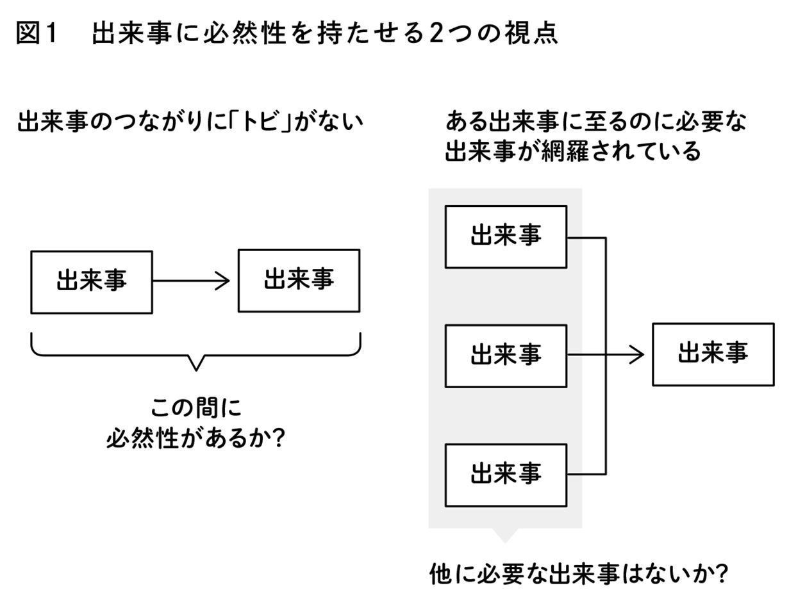

| 戦略的ストーリー思考入門 | |
| 生方正也 | |
| (2014) | |
はじめに
米国等で行われている講演イベント「ＴＥＤ」では、ビジネスやデザイン、科学、ＩＴなど各分野で世界を変えようとしている人たちが登壇し、プレゼンテーションを通してそのアイデアを披露しています。過去には、ビル・クリントン氏、Ｕ２のボノ氏など、登壇した著名人は数えきれません。
これらの登壇者が共通して持っている卓越したコミュニケーション能力の秘訣のひとつに、戦略的にストーリーを活用しているということがあります。
ビジネスにおいても、自己紹介や商品やサービスの紹介、また戦略や新たな企画などを他人に伝える等、様々なコミュニケーションが発生しています。
そうしたコミュニケーションをする際、戦略的にストーリーを活用すれば、自分が考えていることの実現に一歩近づけることができます。
これを本書ではストーリー思考と呼びます。ストーリー思考をひとことでいえば、身近な題材や経験をストーリーの構成に落とし込み、自分の考えを相手に伝え実現に向けて進めていくための技術です。本書では、ストーリー思考の具体的な技術に踏み込んで解説していきます。
さて、ストーリーの持つ力がどのようなものか、一例をお示ししましょう。米国のデザインコンサルティング会社ＩＤＥＯの創設者であるデビッド・ケリー氏のＴＥＤでのプレゼンテーションからご紹介します。
ある医療機器の技術者が、病院で自分の開発したＭＲＩが使われているところを見てショックを受けた。ＭＲＩの検査を受けようとしている小さな女の子がこわがって泣いている。病院の人に話を聞くと、ＭＲＩの検査をこわがるので、小児患者の８割は検査前に鎮静剤を打たなければならないという。自分の作った機械は命を救うはずなのに、子どもに恐怖を与えているところを目にして、彼は心を痛めたのだ。
そこで、その技術者は検査の体験そのものを抜本的に見直すことにした。彼はＭＲＩを子どもにとっての冒険の場にした。装置や部屋に絵を描き、オペレータも子どもへの対応の仕方を博物館の職員に教えてもらった。子どもたちがやってきたら、船の騒音や振動の話をして、冒険に向かうような雰囲気をつくり上げる。そして、「さあみんな、これから海賊船に乗るからね。でもじっとして、海賊たちに見つからないようにするんだよ」というのだ。
その結果、子どもたちの反応は劇的に変わった。鎮静剤を打たなければいけない子どもは、以前の８割から１割に減った。大成功だ。何より彼を喜ばせたのは、ＭＲＩから出てきた女の子が「ママ、明日もまたここに来てもいいよね」と話していたことだった。
心を打つような題材を用いて、展開はドラマティック、主人公の努力が実ってハッピーエンドに終わります。何より、このプレゼンテーションで訴えたかったこと、つまり主人公の技術者が「デザイン思考」「創造性」を発揮して、問題に対して驚くような解決策を考えだしている情景が浮かんできます。魅力的なストーリーのお手本のようなものです。
この本は、こうしたストーリーを作り、伝えていくための考え方をまとめたものです。みなさんは、何らかの形でストーリーを語る経験をしているはずです。この本では、単にその経験を語るだけから一歩踏み込んで、自分の考えていることを実現させるためにストーリーを使う、という観点、言い換えると「戦略的にストーリーを使う」ための考え方を「ストーリー思考 ９つの原則」として紹介していきます。
また、ストーリーを作る、というとこんな風に感じる方がいるかもしれません。
「いいネタがあるかどうかでストーリーは勝負が決まる。自分は錚々たる経歴の持ち主ではないし、特に変わった経験もしていない。いいストーリーなんて作れるはずがない」
いえいえ、決してそんなことはありません。ありふれた題材でも十分です。
その点からいえば、先ほど紹介したストーリーは題材として「できすぎ」かもしれません。この本で主に取り上げたいのはこのような感動的なストーリーではなく、むしろ次に紹介するストーリーの作り方です。このストーリーは、デビッド・ケリー氏が同じプレゼンテーションの冒頭で披露していたものです。
小学校３年生の時、ブライアンという友達がいた。図工の時間、粘土を使って馬を作っていた。すると同じテーブルにいた女の子がのぞきこんで言った。「なにこれ、全然馬に見えないんだけど」。ブライアンは肩を落とし、作った馬の粘土を丸めて粘土入れに投げた。その後、ブライアンがこのような創作に自ら進んで手を出すことはなかった。私たちはこうしていつの間にか、創造的に考えることをやめてしまうのだ。
最初に紹介したストーリーと比べるとどうでしょうか？ 題材としては誰もがどこかで経験していそうなものです。
しかし、伝えたいこと（他の人からの批判など、ちょっとしたことが引き金になって、創造的であることをやめてしまう）を印象的に伝えるには十分です。
自分の訴えたいことを誰にでもイメージできるように伝えるという点では、最初に紹介したストーリーにまったくひけをとっていません。このように、ありふれた題材でも、使いようによっては十分効果的なストーリーになるのです。
題材を思いついてから最終的にストーリーとして表現するまでの間に、実はストーリーを魅力的にする大事な要素が含まれているのです。この本で主に見ていきたいのは、この「題材と表現の間にあるもの」です。
私達は、同じことを話しているつもりでも、必ずしも相手と共通の理解をしているとは限りません。上司と部下、マネジメントとクリエイター、営業と顧客など立場が違えばなおさらです。こうした立場の違いなどを乗り越えて共通の理解や共感を得るために有効なのが、ストーリーの持つ「ゆるさ」であると私は考えています。
それらの構成や表現の技法を、この本では「ストーリー思考 ９つの原則」という形でまとめました。この９つの原則に注意しながらストーリーを作っていけば、戦略的に「伝わるストーリー」を作ることができるようになります。
各章の最後には、練習問題とワークシートをつけましたので、ぜひ気軽に取り組んでみてください。
ＣＨＡＰＴＥＲ１
ＣＨＡＰＴＥＲ２
ＣＨＡＰＴＥＲ３
ＣＨＡＰＴＥＲ４
ＣＨＡＰＴＥＲ５
ＣＨＡＰＴＥＲ６
ＣＨＡＰＴＥＲ７
練習問題 ビジョンを浸透させるためのストーリーを作ってみよう
ＣＨＡＰＴＥＲ８
戦略的なストーリー活用のススメ
「戦略的にストーリーを活用していけば、自分の考えていることの実現に一歩近づける」
これがこの本でみなさんにお伝えしたいことです。
「ストーリー」とは「いくつかの連続した出来事」のことだと思っていてください（後程詳しく説明します）。
そして、戦略的にストーリーを活用するための考え方を、これから「ストーリー思考」と呼びたいと思います。
まず、なぜストーリーを使うと実現に一歩近づくのでしょうか？
「企画を通したい」
「提案した案件を受注したい」
「プロジェクトを成功に導きたい」
「新商品を世に送り出したい」
私たちは、こんなことを考えながら仕事に取り組んでいます。もちろん、実現に向けていろいろなことを考え、行動に移しているはずです。しかし、なかなか思ったように物事が進まないのが現実です。
それはなぜでしょうか？
理由は大きく２つあります。
ひとつは、実現に向けたプランが十分練れていないからです。しっかりプランを考えているつもりでも、実際にはなかなか思うように進みません。これでは実現するはずがありません。
もうひとつは、実現のために必要な関係者の説得が十分できていないからです。いくら立派なプランを立てることができたとしても、ひとりで実行していくには限界があります。自然と他の人といっしょにやっていかなければなりません。そのとき、他の人が納得していなければ、実現したいことに賛同してくれなければどうなるでしょう？
では、ストーリーを使うと、こうしたうまくいかないことが、なぜうまくいくようになるのでしょうか？
ストーリーを使うと、次のようなメリットがあると言われています。
「感情に訴えることができる」
「イメージを共有することができる」
「記憶に残りやすい」
いずれも、言われてみれば確かにそうだと感じるものばかりです。
では、どうしてストーリーを使うと、こうしたメリットを得られるのでしょうか？
それは、ストーリーの持つ「ゆるさ」によるものだと考えています。
このように書くと、計画を立てたり相手を説得する時に「ゆるさ」があってはうまくいくはずがないじゃないか、と感じるでしょう。
「ゆるさ」を活かすストーリー思考
でも、「ゆるさ」が実は実現に向けた鍵になるのです。
例えば、ストーリーは共感を生み出すとよく言います。それは、ストーリーのような適度にゆるく設定された状況に対して、私たちが勝手にいろいろと補足して、イメージをふくらますことができるから、ひとりでに共感できるような状況を想像しているのです。
また、ただいくつかの出来事が流れていくだけのようなゆるいストーリーだから、私たちはそこに何か意味があるのかもしれないと想像し、一般的な教訓を見つけたりするのです。
そして、出来事のつながりがゆるいストーリーだから、それらが実際につながるにはどうなればよいかを補足して、しっかりした計画として理解することができるのです。
これが最初からロジックでガチガチに固められた説明だったら、それを聞いている人はどのように感じるでしょうか？ 既にできあがった計画や説得に入り込む「余地」がないため、イメージもふくらみませんし、感情移入もできません。教訓も確実に出てくるようなものなら、当たり前のように感じてそれを記憶しようともしないでしょう。さらに計画も一見カチッとしたもののように伝えられたら、そこに何かを補おうともしないでしょう。
他の人からのサポートを受けたいなら、そこに他の人が何か考えたり行動に移すことのできる「余地」が必要です。ストーリーは、そうした「余地」を与えてくれるものなのです。だから、ストーリーで考えると、考えていることの実現に一歩近づくことができるようになるのです。
しかし、この「ゆるさ」は、時によくない結果をもたらすことがあります。なんとなくストーリーを使っていると、次のような残念な結果になることがあります。
① 例外もあるのではないか、と勘繰られる恐れ
「うまい話には裏がある」というように、うまくいったストーリーを聞かされると、かえって「本当にそんなにうまくいくのか？」と勘繰りたくなるのが人間というもの。ストーリーとはいくつかの題材を使って説得しようとするゆるいものなので、そのゆるさが裏目に出て、例外があるのではないかという懸念を持たれやすくなります。このように疑いの目を向けられると、途端に説得力がなくなってしまいます。
② 逆に反感を持たれる恐れ
感情移入しやすいというのは、すべての人が共感してくれることを意味するわけではありません。「この主人公の生き方には共感できない」というように、反感を持ってしまう人も少なからずいるものです。特に登場人物が個性的であればそれだけ、人による好き嫌いがはっきりします。うまくはまればよいですが、外れてしまうと冷たい反応しか返ってこない、ということになりかねません。
③ 本当に伝えたいことを理解してもらえない恐れ
ストーリーを使って伝えたいのは、題材の内容ではなく、そこから導き出される教訓です。ただ、題材と教訓との間のつながりに「ゆるさ」があるが故に、なかなか本当に伝えたいことをわかってもらえないことがあります。よくあるのは、自分の印象に残った出来事だけ覚えてしまうケースです。特に取り上げた出来事が強烈な場合にはそうなりがちです。これでは本末転倒ですね。
④ 「本題はまだか？」といらつかれる恐れ
当然ですが、ストーリーは実際に話す時にもその「ゆるさ」が特徴です。順繰りに話さなければ状況がよくわからないため、時間がかかるものです。時間が有り余っている人なら少々話が長くなってもじっくり付き合ってくれるかもしれませんが、せっかちな人や結論だけ知りたいような人が相手の場合、「話が長い」「本題になかなか入らない」と思われてしまう恐れがあります。ストーリーも、人を見ないと逆効果になることがあるのです。
みなさんもストーリーを語っていて、こんな痛い目にあった経験はあるでしょう。
実は私も結構あります。
ただ、それはストーリーが悪いのではありません。ストーリーの持つ「ゆるさ」をコントロールできていないのが悪いのです。
裏を返すと、こうしたストーリーの持つ「ゆるさ」をうまくコントロールできれば、相手への説得にこれほど役に立つものはないでしょう。この本では、こうした「ゆるさ」のコントロールをしていくために、どんな点に注目すればよいのかをまとめています。
戦略的に仕事でストーリーを使いこなす
ところで、みなさんは仕事でストーリーを使っていますか？
ストーリーを活用する、といわれると、何か新しい思考法やスキルのことだと感じる人がいるかもしれません。また、ストーリーというものがビジネスからは程遠い、小説家や脚本家、クリエイターの専売特許だと感じる人もいるでしょう。
「仕事でストーリーを使ったことなんてない」「かっちりとしたデータをもとに考えるのが仕事の基本で、ストーリーのような感性の世界とは合わないのではないか......」
しかし、思い返してみると、私たちは仕事の中で自然とストーリーを使っていたりします。次の例をみてください。
昨日の企画会議向けにある企画の資料を作成した部下（会議には不参加）に、会議の状況から考えると資料の作り直しが必要なことを伝えようとしているシーンです。
昨日の会議なんだけど、のっけからＡ君が遅刻してきて、かなり雰囲気が悪かったわけ。Ｂ課長は時間に厳しいし、最初の企画報告がＡ君だから、会議室の中がピリピリしちゃって、その場にいるのがつらかったよ。５分くらいしてＡ君が入ってきて、まずＢ課長が遅刻の訳を聞いたら、Ａ君が昼食から戻ってくるのが遅れて、とかいうものだからＢ課長がキレて、５分くらいＡ君に文句を言っていた。Ａ君も前の打ち合わせが長引いてとか言えばいいのに。
で、ようやく企画の検討がはじまったんだけど、Ｂ課長はかなり怒りモードで、細かい部分までダメ出しがはじまったものだから、会議というよりお説教。
僕たちの報告は一番最後だったから、当然時間切れで次回の会議で検討することになったんだ。ただ、Ｂ課長の話を聞いていたら、少し資料の手直しをしたほうがよいかな、と思う部分が出てきたんだ。大幅に内容を変える必要はないと思うんだけど、企画のメリットだけでなく、リスクにも触れておいたほうがいいかな、と思うんだ。Ｂ課長はそういうところを根掘り葉掘り聞いて、うまく答えられないとダメ出しする、という感じだったから。だから、少し資料の手直しをしてもらっていいかな。
長々と話をしていますが、結局のところこの人が言いたいのは、最後の「資料の手直しをして欲しい」ということです。その結論にたどり着くまでに、前日の会議でどんなことが起きたかをストーリー仕立てにして話しているのです。
みなさんも、こんな風に相手に話をすることはあるのではないでしょうか。「僕はロジカルに話をするようにしているから、まず結論を言って、その後で根拠を説明するようにしている」という方もいるかもしれません。しかし、何気ない会話のようなゆるいコミュニケーションをとる場面になればなるほど、こうしたストーリーをだらだらと話すことが多くなっているはずです。
しかし、この例のようにただストーリーを使っていれば、ストーリーを戦略的に活用できているかというと、そういうわけではありません。
何気なくストーリー調に話すことが多いからこそ、かえって自分がストーリーを使っていることを意識しなくなっていることも多いのではないでしょうか。そのような状態でストーリーを話し出すと、ストーリー特有のゆるさが悪い影響を及ぼして、「あの人の話はダラダラしている」と思われてしまうのです。
ストーリーを活用する時には、ストーリーを戦略的に活用していることを意識することが大切です。
２種類のストーリーとストーリーを使う４つの場面
「これまで」と「これから」のストーリー
ストーリーについてもう少し詳しく見ていくことにしましょう。
ビジネスで使う場合、ストーリーは大きく２つの種類に分けることができます。
ひとつは、既に起こった出来事をストーリーにしたものです。この本では、「これまでストーリー」と呼んでいきます。
「これまでストーリー」の代表的なものとして、身の周りで起きた出来事やテレビや本で紹介された事例などが挙げられます。似たようなものとして、逸話や昔話といった、実際に起きたかどうかはわからないけれど、多くの人に語り継がれているものも、「これまでストーリー」の一種です。
もうひとつは、将来実現したい出来事をストーリーにしたものです。この本では、「これからストーリー」と呼びます。
具体的には、将来なりたい姿（組織レベルでは「ビジョン」と呼びますね）や、行動計画などがあります。加えると、お客様への提案や企画なども将来実現したいことなので、「これからストーリー」に入ります。このようにストーリーを二種類に分けたのは、特にストーリーにして相手に伝えるまでの頭の使い方がまったく違うからです。
「これまでストーリー」で重要になるのは、題材の選び方です。ある程度相手に興味を持ってもらえるような題材でなければなりません。しかしいくら面白い題材でも、自分が伝えたいこととかけ離れた内容だったら、無理に使うのはやめたほうがよいでしょう。もちろんピタッとくる題材はなかなか見つからないでしょうが、相手が「なるほど、確かに言われてみればそうだな」と感じる程度の題材を選ばないといけません。
一方、「これからストーリー」では、一つひとつの出来事の「つながり」が重要になってきます。いくらこれから実現しようと考えている話だからと言って、実現する可能性がほとんどないようなことを並べられても、相手にとっては夢物語にしか聞こえません。気づいたら、困った場面になると突然神風が吹くとか、白馬の王子が出てくる、というような他力本願丸出しのストーリーになっていることはありませんか？ このようなストーリーでは、聞いている側は信頼できません。何よりも、実現する可能性はほとんどないでしょう。
これだけ頭の使い方が変わってくると、自分が語ろうとしているストーリーはどちらの種類なのかに注意しておいたほうがよいですね。
ストーリーを使う４つの場面
どのような場面でも、ストーリーは利用できます。
次に、具体的な活用場面として「相手に理解を深めてもらう場面」「イメージを共有する場面」「やり方を理解してもらう場面」「プランやアイデアを作り出す場面」の４つに分けて整理していきます。
相手に理解を深めてもらう場面
まず大きなものとして挙げられるのが、相手の印象に残るように、そして理解がより深まるように伝えたい時にストーリーを使うことです。自分が説明しようとしているものについて相手がある程度わかっている場合、一般論的な話をしても、「そんなこと自分はわかっている」と思われがちです。それは、理解が深まるような、印象に残るような内容になっていないからです。そこでストーリーを使うと、より理解を深め、印象づけることができるようになります。
また、「自分の趣味の魅力を相手はわかっていない」「あの人のことを誤解している」と感じる場面もよくあることです。相手はまったく知らないわけではないけれど、どうも自分とは違った理解の仕方をしている、というような状態です。
このような場合、自分の持っている情報を正確に伝えて説得しようとしても、相手は理解しようとしません。当然です。相手は相手で、自分はわかっている、自分の理解の仕方は正しいと思っているのですから。そこでストーリーを活用すれば、こうした理解のギャップは埋まりやすくなります。
特にビジネスシーンで相手に理解を深めてもらいたい場面としては、以下の２つのシーンです。
自己紹介
自己紹介といえば、ビジネスでの基本中の基本です。しかし、通り一遍に名前、会社名、仕事内容、趣味などで自己紹介が終わっていては、相手の印象に残りません。また、相手に自分のことをしっかり理解してもらうことは難しいでしょう。
そこで、自分がどんな人間か、ということがよくわかるようなストーリーを自己紹介に加えれば、より強く自分のことを印象づけられるはずです。
商品やサービスの紹介
自分が扱っている商品やサービスも、自己紹介と同じです。
例えば営業の人なら、自社の商品やサービスについて紹介する機会はたくさんあるでしょう。そのとき、商品のスペックをいくら説明しても、よほどのことがない限り顧客の印象には残りません。顧客は、似たような商品の説明もたくさん聞いているのですから。
また、もっと他の使い方や便利な面もあるのに、そうしたことを顧客に見過ごされていないでしょうか？ そうした使い方はマニュアルに書いてあるはずなのに、なぜか無視されてしまうのです。
ここで商品に関わるストーリーを加えると、その商品のことはより鮮明に記憶に残ります。さらに、具体的にどのような商品かというイメージもわくようになって、一度使ってみようと感じてもらえるはずです。
イメージを共有する場面
自分自身や商品のようにかっちりと理解してもらわなくてもよいけれど、大まかなイメージくらいは共有しておきたい。仕事をしていくと、そんな風に感じる場面も多いはずです。例えば、まだ実現していない将来の話や、なかなか目に見えにくいものなどがあてはまります。
しかし、それを相手にわかってもらうのは難しいことです。自分の頭の中にしかないのですから、それも当然のことです。仮に、相手にわかってもらえたとしても、「それ本当なの？」と疑問を持たれてしまっては、伝えている意味がありません。
例えば、リーダーが今後自分の率いるチームをどう進めていくか。こうしたことは、あまり細かいことまで話していると、マニュアルのようになってしまいます。だからといって何も伝えなかったらチーム内での動き方がバラバラになって、チームはまとまりません。
こういう時には、ストーリーを使うのが一番です。ストーリーを使うことで、細かく「ああしろ、こうしろ」とはならずにイメージを共有することができるようになります。
こうしたイメージの共有の代表としては、次の３点が代表的なものです。
ビジョンを共有する
自分が経営する会社をどのような方向に持っていきたいか。リーダーとして職場をどんな風にしたいか。こうした組織のビジョンをメンバーと共有するのは、組織を動かす上で欠かせません。一方で、こうしたことは、正確に伝えようとすればするほど無味乾燥なものになります。
例えば、「５年後の売上20億円」がビジョンだ、と言われたらどうでしょうか？ 数字はわかりますが、じゃあ自分は５年後どんなことをしているの？ とか組織はどんなことをしているの？ といったことはわかりません。
ここでビジョンをストーリーで伝えてみたらどうでしょうか？ 例えば、自分達の目指す方向性に進んだらどんな会社になっているか、ということをストーリーにして伝えてみるのです。先ほどの疑問の多くは解消され、イメージを共有することができるようになります。もちろん細部でズレはあるかもしれませんが、大きくは外さないでしょう。
よくビジョナリーなリーダーはストーリーを語ると言います。それは、ストーリーでなければ、自分のビジョンのイメージを共有できないとわかっているからです。
価値観
ビジョンと並んでなかなかイメージを合わせにくいのが価値観です。自分は何を大事にして行動しているのか。逆に何をそれほど大事だと思っていないのか。これも単に価値観そのものを伝えたとしても、なかなか「なるほど」とわかってもらえないでしょう。例えば、「お客様を大切にする」という価値観をそのままの言葉で伝えられても、どの程度お客様を大事にするのか、お客様から無理を言われた時にもそれに対応しなければならないのか、など解釈に幅が出てしまい、その価値観を共有したことにはなりません。
悪いことに、価値観のようなはっきり形として見えないものは、人によって捉え方が違うので、いくら話をしてもイメージを共有することができない、ということはよくあります。
ここでも、実際にお客様を大事にしたという題材をストーリーとして伝えれば、よりそのイメージを近づけることができるようになります。もちろんここでもズレはあるかもしれませんが、お客様の定義を細部までする、などのようにかっちり価値観を定義されるよりも、ずっとイメージとして共有しやすくなります。
ブランド
しっかりしたブランドイメージを持つことの大切さは、どこでも言われています。しかし、ブランドに対するイメージは人によってまちまちで、放っておくとまったく違うイメージを持たれていた、なんていう事態になりかねません。しかし、ブランドそのものは目に見えるものではないので、具体的にどういうブランドなのか、その内容をいくら詳しく説明してもわかってもらえません。
そこで多くのブランドでは、広告などを通じてブランドイメージを表現しようとしています。そこでも最近よく見られるのは、ストーリーを活用する手法です。ブランドにまつわるストーリーを示すことで、そのブランドの持つこだわりや価値観、イメージを共有することができるようにしていきます。
やり方を理解してもらう場面
これまで紹介した２つの場面は、何かをわかってもらうためにストーリーを使う、というもので、「ストーリー」と名のつく本などでは、よく紹介されています。
しかし、これから紹介する「やり方を理解してもらうストーリー」は少し毛色が違います。ここでわかってもらいたいのは「どうやって」というやり方のことです。
「具体的なやり方を知るなら、マニュアルを読むのが一番じゃないか」と感じる方もいるかもしれません。しかし、思い返してみてください。自宅には様々な商品のマニュアルがあるはずです。それらにはしっかりとした説明がわかりやすく書いてあるはずですが、それをしっかり活用していますか？ 最初に少しだけ読んで使ってみたけどあとは勝手流で、大部分はページすら開いていない、というのがほとんどではないでしょうか。それは、商品マニュアルだけでなく、業務マニュアルも同じことでしょう。マニュアルはあるのに誰も使っていないということが起きるのは、手順は細かく書いているけれど、具体的な状況がイメージできないからです。
そこで、具体的なイメージづくりのお手伝いにストーリーを使ってみます。そうすると、驚くほどそのやり方が伝わっていきます。
こうしたやり方を理解してもらうためにストーリーを使う場面として、次が挙げられます。
インストラクション
デザイナーのリチャード・ワーマンは、私たちのコミュニケーションの半分はインストラクションだ、と述べています。振り返ってみれば、私たちのコミュニケーションの多くはインストラクション、つまり「相手が何かをできるように指示する」ことに費やされていることに気づきます。そして、このインストラクションほど、自己流がはびこっているものはありません。
もちろん、定型化されたインストラクションもあります。業務手順やマニュアルなどです。しかし、そうしたものをベースに部下や同僚に仕事のやり方を教えても、具体的にイメージできず、忘れられるだけです。それよりも、表面的な手順以上に、どこが難しいのか、どんなところに気をつけたほうがよいのか、という個人的な経験や印象といったものを教えてもらったほうが、全体の流れがよくわかるということもあります。
その際、実際にどのように仕事が進んでいくのか、自分が同じことをした時にどんな失敗があったか、どんなところに苦労してうまくいったかをストーリー仕立てにして説明したらどうでしょうか？ よりその仕事の流れがイメージしやすくなるはずです。
企画の提案
意外に感じるかもしれませんが、お客様に提案する時、ストーリーを使ってみるとより理解・納得度が高まります。単に提案したい内容を一つひとつ断片的に伝えるより、その提案を実行していくとお客様の抱える問題がどのように解決するのか、状況がどう変わっていくのかがわかれば、お客様もその提案がより実現性の高いものと感じることができるでしょう。
企画の提案でストーリーを使うのは、社外のお客様に対してだけとは限りません。社内で何か企画を通したい時にもストーリーを使って説明してみると、その企画を実行するとどうなっていくのかがわかるようになります。
プランを練る、アイデアを生み出す場面
ここまでは主に誰かに伝える時にストーリーを活用する場面を見てきました。ストーリーは、こうした「伝える」場面にだけ役に立つわけではありません。自分で何かアウトプットを出す時にも、ストーリーは役に立ちます。
線の思考で今後のプランを練る
これからどうやって行動するかを考える時、みなさんはどのように考えますか？ 将来的に必要なアクションを洗い出して整理し、アクションプランにまとめていくというやり方をする方もいるでしょう。そんなときも、ストーリーを使うと効果的です。
ストーリーを考えるようになると、具体的なアクションをしたら次に何が起きるのかを考えることになります（そうならないと、ストーリーができあがりません）。こうした一つひとつのアクションのつながりを意識するようになると、他にしなければならないことが思い浮かぶようになります。何より、最終的なゴールにたどり着かないといけないわけですから、単にアクションを順序よく並べればよいわけではありません。
よく「点の思考」とか「線の思考」と呼んだりすることがあります。「点の思考」は考えていることがそれぞれ断片的でつながりがないこと、「線の思考」はそれぞれがつながっていることを示します。ストーリーでプランを練るのは、まさに「線の思考」を実行しているのです。
アイデアを生み出す
ぽんといきなりアイデアが浮かぶ場合は別ですが、論理的に候補を挙げてみるよりも、具体的にこんな出来事が起きるといいなということを思い浮かべて企画に落とし込むほうが、アイデアは思いつきやすくなります。
アイデアは何もないところからは浮かんできません。その材料として断片的なデータや情報ではなく、ストーリーを活用すると、斬新なアイデアに結びつくことがあります。
新しい商品を企画する場合も、ひとりでうんうんうなっていてもいい商品のアイデアが浮かんでくるわけではありません。実際に消費者や利用者はどのように商品を使っているのか、を思い浮かべるだけで、ニーズに沿った商品アイデアが浮かびやすくなります。
CHAPTER 1 まとめ
○ビジネスで使うストーリーの特徴は「ゆるさ」にあり
・「ゆるさ」をどのようにコントロールするかで、使えるストーリーになるかどうかが決まる
○ストーリーは戦略的に活用してこそ価値がある
・ストーリー自体は何気なく使っているもの
・何気なく使っているからこそ、その力を発揮しきれていないのが現状
○二種類のストーリー：「これまでストーリー」と「これからストーリー」
・「これまでストーリー」は題材選択の適切さと伝え方がカギ
・「これからストーリー」は一貫性のとれた流れになっているかがカギ
○ストーリーが使える４つの場面
・相手に理解を深めてもらう
・イメージを共有する
・やり方を理解してもらう
・プランを練る、アイデアを生み出す
すべては「何のためのストーリー？」からはじまる
この章ではストーリー思考、つまり戦略的にストーリーを活用する考え方の概要について紹介していきます。
ストーリーを考えるというのは、楽しいものです。自分の頭の中であれこれイメージしながら出来事を組み立てていく。その組み立て方は自由なので、いろいろな工夫をすることができます。
しかし、ストーリーを作っていく途中で、結局自分はそのストーリーで何を伝えたかったのかが、ふと見えなくなってしまうことがあります。それでは、本末転倒です。
基本的にストーリーは、自分の伝えたいことを、相手によりわかってもらうために作っていくものです。となると、当然ながらまず伝えたいことがあるはずです。それをはっきりさせるところがストーリーを考える出発点です。
伝えたいことが違えば、ストーリーの内容や題材も変わってきます。例えば、ベンチャー企業の経営者は、自らの起業ストーリーを語る機会がたくさんあります。ただ、何を伝えたいかによって、ストーリーの内容は変わってきます。単に自分の会社のことを知ってもらいたいだけなら、波瀾万丈のストーリーを語ればよいですが、社員に自分の価値観を共有したい場合は特に価値観を反映したような題材に絞ったストーリーにするはずです。また、ある人を採用しようとしている場合には、この会社の魅力が前面に出るような題材を選ぶでしょう。こんな風に伝えたいことをはっきりさせないで、とりあえず起業ストーリーを話すとしか考えていないと、ピント外れのストーリーになってしまうのです。
みなさんは、今誰にどんなことを伝えようとしていますか？ それは何のためですか？
まずはこういったところをはっきりさせてから、ストーリーを作り伝えることについて考えていきましょう。
題材は伝えたいことによって決める
先ほど触れたように、題材は自分の好みで決めてよいわけではありません。伝えたいことを最も端的に示すような題材であるというのが第一条件です。「はじめに」で紹介したデビッド・ケリー氏のプレゼンテーションでも、もっと面白いストーリーはあったかもしれません。しかし、プレゼンの冒頭で「ふとしたきっかけで創造性の芽をつまれてしまう」ということを伝えたいなら、それに沿った題材を選ばなければ意味がありません。決して「題材ありき」ではないのです。
もちろん、ストーリーを使う場面によって、題材選びのコツはあります。また、場面によっては否応なしにこの題材を使わなければならないこともあります。部下に具体的な仕事のやり方の説明をする時には、その仕事の手順を題材にせざるをえません。このあたりの詳細については、ＰＡＲＴ３で紹介します。
将来的に使えそうなストーリーのネタという観点で題材をストックすることは大いに役立つでしょうが、まず伝えたいことありき、という基本は忘れないでおきたいものです。
ストーリー思考 ９つの原則
題材が決まれば、その題材をいかに調理するかを考えていきます。この調理の仕方のことを、この本では戦略的なストーリーの活用、つまりストーリー思考と呼んでいます。
戦略的にストーリーを活用するためのポイントは、９つあります。この本ではそのポイントを「ストーリー思考 ９つの原則」と呼びます。これらの原則は、ストーリーや物語研究、そして小説技法などで理論化されているものに加え、研修等で「こんな風に考えたらうまくストーリーができた」という場面で使われていた考え方をまとめたものです。
「９つもあったら多くて、覚えられないなあ」と感じている方がいるかもしれません。実は９つといっても、大きく３つのことに対して３つずつの原則なので、それほど多いとは感じないはずです。詳細はＰＡＲＴ２で詳しく解説しますので、ここでは簡単に概要を紹介します。
ストーリー ３つの基本原則
ストーリー思考では、「ストーリー」をどう見るかという観点から、３つの基本原則があります。
原則１ ストーリーを「連続した出来事」として捉える
ストーリー思考では、単に何か題材を語ることをストーリーだとは考えません。「こんな題材があるな」と一くくりにせず、題材の中でいくつかの出来事が連続して起きていると捉えます。出来事の連続と考えることからストーリー思考ははじまるといっても、過言ではありません。
原則２ 「はじまり」と「おしまい」を意識する
ストーリーを作ったり語ったりする時、どこを「はじまり」としますか？ そして、どこで「おしまい」としますか？ 「え、そんなの決まっているよ」と考えているようでは、ストーリーを活用する幅は広がりません。「はじまり」と「おしまい」の切り方で、同じ題材でもガラッと伝えたいことや見え方は変わってきます。
この「はじまり」と「おしまい」に気をつけるのが２番目の原則です。
原則３ ストーリーの「舞台」と「地」を意識する
ストーリーとして語る題材には、特別な何かがあるはずです。見方を変えれば、それは主人公のあなたが何かの舞台にあがるようなものです。その舞台も、実は捉え方によっていかようにでも変えることができます。例えば、あるプロジェクトのストーリーを語る時、プロジェクトのメンバーとして活動しているのを全体と捉えるのか、その中のひとつのミーティングを舞台として捉えるのか。これによって、ストーリーはまったく変わってきます。
同時に大事なのが、舞台にあがる前の状況です。この本ではこれを「地」と呼びます。人からストーリーを聞いている時、いきなり本題からはじまり、前後の脈絡がなくて話を理解するのに大変、ということはありませんか？ それは「地」が十分わかっていないからです。となると、地にも注意する必要があります。ただ、「地」の話ばかりしていると、いつまでたっても本題（舞台のことですね）にたどり着かず、聞いている側が何の話だかわからなくなってしまう恐れがあります。「舞台」と「地」の２つのバランスをどうとるか。ここも戦略的にストーリーを考える際の大きなポイントです。
ストーリーを作る為の３つの思考原則
続いて、「これからストーリー」を考えていく時の大切な考え方の原則に移りましょう。後の章で詳しく見ていきますが、この原則を守らないと、詰めの甘いストーリーになってしまいます。ここで述べる思考法はあまり見慣れないものなので、「なぜそんな風に考えなければならないの？」と感じるかもしれません。詳しくは後の章をご覧いただくとして、ここではその考え方のエッセンスだけ紹介します。
原則４ 逆算思考
今現在、つまり目の前のことから考えるのではなく、「おしまい」から考えていく。これが、「これからストーリー」を考える際の基本です。「あれをやって、次にこれをやって......」とは考えるのではなく、「こうなるために、何が必要かな？」という逆算の考え方が、しっかりとしたストーリーを作るコツです。
原則５ 成果物を組み立てる思考
プランを立てる時、「あれをやって、これをやって......」という風に、活動、つまり何をするかを考えるのは自然なことです。しかし、実はこうした発想が、考える幅をひとりでに狭めるもとになります。「プランを立てるのだから、どんな活動をするのかが大事じゃないか」と感じるかもしれません。しかし、本当に重要なのは何をするかではなく、何が得られるとよいのか、ということです。
この「得られるとよいもの」を「成果物」と呼びます。使えるストーリーを作るためには、どんなことをするかはいったん脇に置いて、どんな成果物がなければならないのか、という観点で考え始めることが大切です。
原則６ 難所想定の思考
プランを立てる時になると、つい「このプランは完璧だ」という風にバラ色の将来を思い描いてしまうものです。しかし、物事は思い通りに進みません。それは、プランが悪いのではなく、思い通りに進まないことを想定しきれていないことが問題なのです。
「自分の立てたプランは完璧だから、想定外など起こるはずがない」などとべき論に縛られるのではなく、どこかでつまずくのだ、という発想を持つ。その上で、どこでつまずきそうか、つまずかないようにするにはどうすればよいかを考える。こんな頭の使い方をしていくと、柔軟に対応することができるようになります。
ストーリーを伝えるための３つの表現原則
最後に、戦略的にストーリーを伝える時の３つの原則です。この工夫の仕方で、同じ題材のストーリーでも、相手に与える印象は全然変わってきます。
原則７ 出来事を並べる順序
ストーリーは、出来事の並べ方ひとつで、印象や伝えたいメッセージが大きく変わってきます。時系列で淡々と並べるのか、最初に結論を持っていくのか。このあたりのことは、あまり考えずに思いつきで並べているケースが多いようです。出来事の並べ方にどのような効果があるのかに注意しながらストーリーを進めていくことが重要です。
原則８ 視点の置き方
あなたが語っているストーリーの主人公は誰ですか？ いつも自分が主人公になっている人は、少し発想を変えて他の人を主人公にしてみてください。
例えば、あなたがリーダーをしていたプロジェクトのストーリーを、ひとりのメンバーを主人公にして語ってみる。何かの商品を提案する際、最終消費者を主人公にして、その購入シーンをストーリーにしてみる。そうすると、いつもとは違ったストーリーの展開が見えてくるかもしれません。
原則９ 伝える場面の選択
戦略的にストーリーを伝えるというのは、ストーリーの中身を工夫することだけにとどまりません。どんな形でストーリーを伝えるのかまで工夫してはじめてストーリー思考を実践したことになります。
例えば、ストーリーを誰かに語る場合はその話し方をどのようにするか、文章で読んでもらう場合はその文書の渡し方をどうするか。そうした細かい点まで工夫していくとよいですね。
ストーリーを伝える相手に注目する
ストーリーを活用する場合に、もうひとつ気をつけなければならないことがあります。というより、ここを忘れてしまってはストーリーを伝えている意味がありません。
ストーリーは基本的に誰かに伝えるために作るものです。となると、相手の関心をひきつけるようなストーリーでなければ意味がありません。そう、ストーリーは自分本位で作るのではなく、常に伝える相手の顔を思い浮かべる必要があるのです。
このことは、ストーリーでは特に気をつけなければなりません。なぜなら、ストーリーは具体的な出来事をもとに伝えるわけですから、その出来事が相手に興味を持ってもらえなければ意味がないわけです。いくら自分が野球好きでプロ野球を題材にしたストーリーを思い浮かべ、「あのとき長嶋監督がさあ......」と面白おかしく言っても、相手からは「また自分の世界に入っているね」と思われてしまうのがオチです。
もちろん相手があまり興味を持っていない題材しか使えない、という場面も出てきます。そうした時こそ、９つの原則をフルに活用していきます。例えば、冒頭で相手に関心を持たせるような工夫をしておかなければなりません。その場合、出来事の並べ方や視点の置き方などの工夫で、関心をひくことができるようになります。
こうした工夫は、常に相手のことを想定しなければなりません。後ほど「サプライズ」という話が出てきますが、決して「ここでこんなこと言ったらびっくりするかな」のように自分本位なサプライズの出し方をしてはいけません。どのように相手の関心をひくか、という相手本位のストーリーを考えたいものです。
相手を意識するのは、題材選びの時だけではありません。ストーリー思考の原則をもとにストーリーを作る際にも、相手のことを意識しておかなければなりません。例えば、ストーリーの舞台設定や背景の説明も、相手がその題材をどの程度理解しているのかを考えておかなければ、独りよがりの舞台設定でのストーリーとなり、相手から「自分の話に酔ってるな」と思われるだけです。
ここまでで、ストーリー思考の役者たちがそろいました。それをまとめると、図のようになります。
まずは自分が伝えたいことがあります。その伝えたいことをあてはめる題材を探します。題材が見つかったらその題材を調理する、これがストーリー思考の９原則です。
ここで忘れてはいけないのが、ストーリーを伝える相手です。ストーリーを伝える相手に関しては、題材選びからはじまって、ストーリー思考の９原則を考える時には常に気をつけておかなければなりません。
このような流れを経て、ストーリーが完成します。こうやって流れを書き出してみると大変なように見えますが、実際にやってみると楽しいものです。
題材に引っ張られすぎないのがストーリー思考
次の章に進む前に、題材について少し触れておきたいと思います。
ストーリーを活用する際、題材選びはとても重要です。しかし、目新しい題材を選べばよいわけではありません。よく、あまりよく知られていない題材を探すのに躍起になっている人を見かけますが、それはあまり感心できるものではありません。
料理でたとえて言えば、題材は食材です。もちろんよい食材であることは大切ですが、同時に、それをいかに調理するかにも気を配らなければ、よい料理にはなりません。
これを、簡単なストーリーにしてみましょう。
ある町に二軒の寿司屋がありました。どちらも町で評判の寿司屋で、遠くから食べにくるお客様もたくさんいます。しかし、この２つのお店は少し雰囲気が違います。
そのうちの一軒、寿司鮮は、よいネタで寿司を握ると評判です。店主は常に最高のネタを求めて、近くの市場だけでなく、地方の漁港の市場とも直接取引をしています。
店主はもちろんネタのよさに自信を持っていますから、そのネタを十分味わってもらいたいと、他の店より大ぶりの寿司を握っています。そのため、何貫か食べるとおなかがいっぱいになってしまい、思ったほど多くの寿司を味わうことができません。また、ネタの鮮度をアピールするために、どれも同じような握り方になります。さらに、一定のクオリティを満たすネタしか仕入れないので、日によってはネタの種類が少ないこともあります。
ネタに惹かれたお客様は、まず寿司鮮に訪れます。最初はネタのよさに感動しますが、次第に単調さを感じるようになります。何度か足を運ぶと、もうひとつの店に向うようになります。そのため、寿司鮮は常連客が少なく、観光気分のお客様の多い、少し落ち着かない雰囲気が漂っています。
もう一軒の寿司屋、寿司盛でも、ネタが大切なのは変わりありませんが、ネタばかりに力を入れているわけではありません。ネタは近くの市場で手に入る中で最もよいものを集めます。そして、それらを最上の状態で食べてもらえるよう、様々な工夫をするのです。丁寧に下ごしらえした上で、ネタに合わせた仕事がしてあります。そして、ネタとシャリのバランスに気をつけて握られています。単においしく握るだけではなく、見た目も美しくなるように握り方も工夫します。
お客様は、見た目も美しく、変化に富んだ寿司を楽しめる寿司盛の常連になっていきます。常連客同士の付き合いもよく、寿司盛ではくつろいだ雰囲気が漂っています。
どうでしょう？ みなさんは寿司鮮のように題材の目新しさだけを追求して、浮かれた雰囲気を作り出したいですか？ それとも寿司盛のように題材をしっかりと料理して、落ち着いた雰囲気を生み出したいですか？
この本では、寿司盛のように身近な題材を使ってストーリーを活用するための考え方を紹介していきます。そのため、「ストーリー」と聞けば思い浮かぶような、感動を呼び起こす「いい話」を題材にしたストーリーはあまり取りあげません。「ストーリー思考」を使いこなすためには、目新しい話がなければならない、という先入観を持ってもらいたくないからです。
練習問題 ストーリーを考える準備
誰かに「ここを改善して欲しい」と感じていることはありませんか？ワークシートに次の内容を埋める要領で、それをストーリーにして話せるように準備をしてみましょう。
① ストーリーを伝える相手（ワークシート① ）
② 改善して欲しいこと（ワークシート② ）
③ 次に、ストーリーの題材をイメージしてみましょう（ワークシート③ ）。
・どんなジャンルの題材がよさそうか？（ビジネス的な題材？ 実体験？ 過去の教訓？ 人から聞いた話？ まったく架空の話など）
・どんな結末の話がよいか？（ハッピーエンド？ 失敗談、等）
④ 題材がある程度固まったら、そのストーリーを伝える相手についてもう少し丁寧に捉えておきます（ワークシートの④ ）。
・自分が伝えようとしているストーリーの題材についてどのくらい知っていそうか？
・自分が伝えようとしているストーリーの題材についてどのような関心をもちそうか？
・自分がストーリーを通じて改善して欲しいことについて、どんな反応を示しそうか？
（実際のストーリーの作り方、伝え方はCHAPTER３以降で解説します）
CHAPTER 2 まとめ
○まず何を伝えたいかをはっきりとさせる
・誰に何を伝えるのか
・題材は伝えたいことに沿ったものを選ぶ
○ストーリーを伝える相手は誰かをはっきりさせる
・相手の関心に応じた題材を選ぶ
・関心のない題材を使わざるを得ない場合は、伝え方で工夫する
○準備ができたら、ストーリー思考 ９つの原則へ進む
○題材の新鮮さばかりに目を向けない
・題材の調理の仕方を工夫するのがストーリー思考
COLUMN
ストーリーの展開を仕事に活かす
ストーリーの典型的な流れ
戦略的にストーリーを作り、伝えていく際、世の中にあるストーリーはどうなっているのかを知っておくのはとても役に立ちます。様々な研究を通じて、古今東西の物語（小説から昔話、神話の類まで）には次のような基本的な流れがあることがわかっています。
このストーリーの流れは、意外なことに現在でもいろいろな場面であてはまったりします。いわゆる文学だけでなく、映画（特にヒーローもの）やアニメ、さらにはロールプレイングゲームなども、こうした流れになっています。ハリウッドの映画の中には、こうした流れを意識的に活用して製作しているものもあります。ちなみに、その最も有名なものが、スターウォーズ・シリーズです。
みなさんの仕事でうまくいった経験を振り返ってみると、この流れにあてはまるものも多いのではないでしょうか。
① 日常の描写
ストーリーの基本原則３で説明した「地」の説明部分です。
② 舞台にあがる
何らかの問題が発生して、主人公は物語の「舞台」にあがります。
③ 試練
舞台にあがるといくつかの試練にあいます。最初は順調なこともありますが、いつか必ず壁にぶつかります。
④ 試練をくぐりぬける
そうした試練を様々な人の支援も得ながら、なんとかくぐりぬけ、試練を通じて主人公自らが成長していきます。同時に、自分を支援してくれた人とはこの後も何らかのつながりを持つことがあります。いわば、クライマックスに向けた準備期間のようなものでしょうか。この③と④は、何度か繰り返されます。
⑤ 最後の試練
幾度かの試練で成長した主人公は最後の試練に向います。ここが物語のクライマックスです。ゲームで言えばボスキャラのような強敵が登場して、最後の戦いをするところです。
⑥ 勝利
これまでの成長や支援者のサポートのおかげで、最後の試練も無事くぐりぬけます。
⑦ 舞台を降りる
もとの日常生活に戻ります。
⑧ 日常
再び日常生活を送ります。しかし、それは最初に送っていた日常とは少し違ったものとなっています。
このように説明すると、「もちろん小説とか映画やアニメではこういうパターンもあるけど、ビジネスとは無関係なのでは？」と感じるかもしれません。しかし、今紹介したストーリーの基本的な流れは、私たちが実際に仕事をしている場面でもあてはまることが多いのです。次の例をご覧ください。
品質管理部のＡさんは、製品の品質安定化のための業務をしている。ある日、主力製品の不良品率が高くクレームが増えていることに気づき、何とかしなければならないと考えた。そこで工場に出向き、何か変わったことがないかと聞いてみたが、現場の人は相手にしてくれなかった。途方にくれていると、昔品質改善活動の手伝いをした時に仲良くなった人が助け舟を出してくれ、現場の人から話を聞くことができた。
その話によると、コスト削減のためにある部品の調達先を変更して、それ以降組み立て作業がスムーズにできなくなったという。その部品を調べてみると、価格は安いが使い勝手が悪く、組み立ての際にミスをするケースが増えそうなのは容易にわかった。
そこで、購買部長に直接話をすることにした。しかし、購買部長からはコスト面から仕方なく調達先を変えたが、会社の業績を考えるとこれ以上コスト増になるようなことは購買ではできない、と言われた。Ａさんは一瞬ひるんだが、長い目で見ると業績に響くのは不良品の多いことではないか、と熱意を持って訴えた。Ａさんの訴えを聞いた部長は、しばらく考えた末「確かに君の言う通りだ。現場からも組み立てで不具合が起きて困るという声をもらっている。もとの調達先に戻しても採算がとれるようにしてみよう」と答えた。助け舟を出してくれた現場の人が、まえもって部長に現場の状況を訴えてくれていたのだ。
Ａさんの説得が実り部品の調達先をもとに戻した結果、主力製品の不良品率は急激に下がり、クレームも減った。
この例では、主人公はまず主力製品の不良品率増加に対処するという舞台にあがりました。しかし、いきなり現場の人から話を聞けないという試練に直面してしまいます。そこで支援者が登場します。昔いっしょに改善活動をした人の手助けで、現場の状況を把握することができました。そして問題の原因が部品にあることを把握すると、最終的には部品調達の責任者である購買部長と直談判に出向きます。これが最後の試練です。Ａさんの説得に加え、支援者のサポートもあって、最終的にはもとの部品に戻すという勝利を得ることができました。この結果問題も解決したため、主力製品の不良品率増への対処という舞台から降りて、もとの品質管理の業務に戻ります。しかし、以前あった問題は解決されているという、以前とは違った日常に戻ったのです。これはまさに、先ほど紹介したストーリーの基本的な流れそのものです。
このような基本的な流れを頭に入れておくとどんな点で役に立つのでしょうか？ まず「これまでストーリー」を語る際には、相手はストーリーを違和感なく聞くことができるでしょう。誰もが小さい頃からなじんだ基本的な流れなので、ストーリーを自然に感じることができます。
一方「これからストーリー」を考えていく際はどうでしょうか？ このような流れがわかっていれば、「このあたりで何か試練がありそうだな。じゃあ、誰が支援してくれるだろうか？」「最後のヤマはどんなものだろう」といったように、ストーリーの組み立てでのイメージがつきやすくなります。
ストーリーは「流れ」で捉える
ストーリーとは、「出来事の流れをはっきりと見せたもの」ということができます。いろいろなことを一つひとつが独立したものとして捉えるのではなく、つながりのある流れとして捉えることです。
こうしたストーリーを作り、考えるためには、大きく分けて次の２つのことをしておく必要があります。
① 流れをはっきりと見えるようにしておく
流れを捉えるためには、まずは何がどのように流れているのかがはっきりわからなければはじまりません。ぼんやりと「何か流れていそうだな」というレベルでは、しっかりしたストーリーには到底ならないでしょう。
② スムーズな流れにしておく
話の流れが滞っていると、どこか不自然な印象を与えます。それは相手に伝える時も、自分で何か行動しようとする時も同様です。流れはスムーズであるのが自然なのです。スムーズな流れにするのは、自然現象や社会ではありません。自分自身です。
この２つのことのうち、①がCHAPTER２で紹介したストーリー思考の９原則のうち、「ストーリーの基本原則」にあてはまります。そして②が「ストーリーを作る思考原則」です。
この章では、次の３つのストーリーの基本原則について紹介していきます。
・原則１ ストーリーを「連続した出来事」として捉える
・原則２ 「はじまり」と「おしまい」を意図的に設定する
・原則３ ストーリーの「舞台」と「地」を意識する
原則１ ストーリーを「連続した出来事」として捉える
最近参加した会議を思い出してください。そして、その会議でどんなことがあったか書き出してみてください。
その際、「いつもの朝会で、みんな一言ずつ最近の状況を話したけど、途中から数名が言い争いを始めて、他のメンバーはしらけていた」のように簡単なもので終わりにしないでください。もっと丁寧に、どんなことがあったかを細かく挙げてみましょう。
例えば、こんな要領です。
・開始時間に３人しか集まっていなかったので、開始を５分遅らせる
・５分後に開始したが、Ａさんがまだやって来ず
・課長から先週のレビューと今週の重点取り組み活動の説明がある
・Ｂさんが先週の活動報告をする。特に質問等なく終了
・自分が先週の活動報告をする。特に質問等なく終了
・Ａさんが会議室に入る。課長に遅れた理由を聞かれ、それに答える
・Ｃさんが先週の活動報告をする。課長から目標未達の原因を聞かれＣさんが答えるが、しどろもどろで突っ込みが入る。Ａさんの遅刻に腹を立てたのか、課長の質問が少しいじわる
・Ａさんが先週の活動報告をする。課長から細かくチェックが入る。Ａさんもしどろもどろの答えで突っ込み入りまくり。最後に課長から「最近たるんでるから、簡単な質問にも答えられないんだ」とダメ出し。Ａさんがかわいそうだが自業自得
・課長から再度今週の重点取り組み活動の説明があって終了
仮に30分の会議だとしても、細かく出来事に分けてみれば、いろいろなことが起きていることがわかります。
もちろん、このように出来事を分けることは、どんな作業にも当てはまります。例えば、メールを送るという単純な作業も、細かく見れば、次のような流れになっていることがわかります。
・メールを送らなければいけないことを思い出す
・メールの文面を書く
・文面の内容を見直す
・書かなければいけないことが抜けていることに気づき、追加する
・宛先が間違っていないか確認する
・送信ボタンをクリックする
まずはこのような形で、ストーリーにしたい題材をいくつかの出来事に分けてみましょう。
題材をいくつかの出来事にわけてみると、一見、面白いストーリーにはなりそうにないものでも、意外と面白いものになるかもしれません。なんにせよ、ストーリー思考の第一歩は、「伝えたい題材を出来事の単位に分割する」ということです。
ストーリー思考では、ストーリーを「ひとつの題材」ではなく、「いくつかの出来事が組み合わさったもの」という捉え方をします。この２つは、一見するとあまり違いがないように感じられます。しかし、実は発想としてかなり違います。
「題材」というまとまった単位で発想しているだけの場合、題材の良し悪しだけでの勝負となります。つまり、「これは面白くなさそうだな」という題材は自動的にストーリーの候補から外れてしまいます。せっかく使える題材を、見かけだけで捨ててしまうのはもったいないことです。
他にも、まとまった単位での発想ではうまくいかないことがあります。ダラダラとした経過説明になったり（昨日お客様へ訪問しました。少し世間話をした後、現状の案件の検討状況の確認をして......）、単なる感想になったりしがちです（いやー、昨日の商談はなかなか大変だったな。いきなり無茶な仕様変更を申しだされてあせったよ。お客様もいろいろだな）。
一方、「連続した出来事」という発想をしたらどうでしょう？ ある題材でも出来事の取りあげ方や組み合わせ方は限りありません。そこに、戦略的にストーリーを作る余地があるのです。
例えば、一部の出来事を除いたり、話す順序を前後させることで、違った意味のストーリーになります。強調の仕方も自由自在です。ある出来事を強調して、別の出来事はさらっと流す。何か題材があるとまとめて見るのでなく、連続した出来事という捉え方をしていけば、こうしたことが簡単にできるようになります。
そして、この発想が、原則２につながっていきます。
原則２ 「はじまり」と「おしまい」を意図的に設定する
登山を題材にしたストーリーを思い浮かべてください。
きっと、山頂に登ってガッツポーズしているシーンはあるでしょう。
ところで、そのシーンはストーリー全体のどこでしょうか？ それはストーリーの途中ですか？ ストーリーの終わりですか？ もしかしたら、そのシーンからストーリーを始める人もいるかもしれません。
このように、同じ題材でも、いろいろな出来事を「はじまり」にもすることもできるし、「おしまい」にもすることもできます。「おしまい」を登頂した時にするのか、下山した時にするのかで、まったく異なるストーリーになるでしょう。これは、「はじまり」でも同じことです。同じ登山の題材でも、登山口に立った時から始めれば、仲間と力を合わせて登頂に成功したストーリーになるでしょう。また、登山の計画を立て始めた時にすると、計画の立て方が適切でなかったことで苦労したストーリーにできます。さらにふと「登山しよう」と思った時を「はじまり」にすることもできます。この場合は、何気ない希望をどのように実現したかというストーリーになるはずです。なんなら、登頂した時点をはじまりにしてしまってもよいのです。この場合は、下山の大変さを伝えるストーリーになるでしょう。
このように、「はじまり」と「おしまい」をどこで設定するかによって、全然違うストーリーになります。
ここまで読んでお気づきだと思いますが、ストーリーを考える場合、当たり前ですが見落としがちなことがあります。それは、以下の２点です。
・ストーリーは「はじまり」と「おしまい」がなければいけない、ということ
・「はじまり」も「おしまい」も自動的に決まるものではなく、自分が自由に決めてよい、ということ
この原則はかなり大事なものです。なぜなら、何を「はじまり」にして何を「おしまい」にするかで、同じ題材を使ってもストーリーは全然違うものになるからです。
なお、ここまでは主に「これまでストーリー」を想定していましたが、同じことは「これからストーリー」でも言えます。むしろ、将来のことを考える時こそ、「はじまり」と「おしまい」をしっかりと設定することが大切になります。
例えば、プロジェクトを運営する計画を立てる時のことを思い浮かべてみてください。私もコンサルタントという職業柄、よくそうした場面に立ち会う機会がありますが、その際、いつの間にか「おしまい」が「経営陣への報告」となっていることがあります。仮に経営陣にプロジェクトの成果を報告する場面を「おしまい」にしてしまうと、どうなるでしょう？ 報告までの打ち合わせや資料づくりは盛り上がるけれど、報告が終了すると尻切れトンボのプロジェクトになってしまうことになります。
でも、それって本来おかしいですよね。本来なら「おしまい」は経営陣への報告ではなく、プロジェクトの成果が出た時点になるはずです。このように考えると、プロジェクトのストーリーで何を「はじまり」にして何を「おしまい」にするかについて、かなり注意しなければなりません。
繰り返しになりますが、ストーリーの「はじまり」と「おしまい」は誰かが決めてくれるものではありません。自分で自由に設定することができるし、しなければならないのです。「はじまり」と「おしまい」をどのように設定するかで、使えるストーリーになるかが決まってきます。
さて、「はじまり」と「おしまい」の決め方は自分次第、と書きましたが、よい決め方はあるのでしょうか？ そのヒントとなりそうな考え方を２つ紹介します。
「おしまい」でストーリーのキレが決まる
原則として、「おしまい」をどのように決めるかは、そのストーリーの目的で決まってきます。つまり、「これまでストーリー」ならそのストーリーで何を伝えたいか、「これからストーリー」なら何を実現しようとしているのか、ということがストーリーの伝えたい目的です。そうすると、「これまでストーリー」ならそのストーリーで伝えたいことがわかる時点、「これからストーリー」なら、自分の望む状態になったと思える時点に設定します。
例えば、難しい課題に対して経験の浅いメンバーで一致団結して取り組み、課題解決に成功したという題材をストーリーにしようとする場合、「おしまい」はどうなるでしょうか？ これも、そのストーリーの目的によってきます。
もし全員で取り組めば難しい課題も解決できることを伝えたければ、課題解決に成功した場面を「おしまい」にします。決して課題に一致団結して取り組みはじめた場面でストーリーを終えないほうがよいでしょう。それは、「一致団結して取り組めば困難な課題も解決できる」ということを伝えたいからです。
一方、一致団結して取り組むとはどのようなことかを伝えたい場合はどうでしょうか？ そのときには、伝えたい過程がすべて含まれた時点を「おしまい」にします。そのような時には結果はある意味どうでもよく、一致団結した取り組みが終わった時点を、思い切って「おしまい」としてしまってもよいのです。
なお、ここで気をつけたいのは、ムダに「おしまい」を引っ張らないということです。後日談のようなものをダラダラ加えるストーリーは、結局何を伝えたいかはっきりしなくなってしまいます。何より、聞いている側が後日談の方に気を取られて、肝心の中身を忘れてしまう恐れがあります。人は「結局どうなったのか？」を、どうでもいいところまで知りたがりますから。
ストーリーに「キレ」があるかどうかは、最後の部分で決まります。自分の伝えたいことと相手が受ける印象がピタッと重なるような「おしまい」を決めましょう。
「はじまり」は「おしまい」から決める
これまでの説明からおわかりのように、いきなり「はじまり」をどうするかを考えるのは得策ではありません。「おしまい」で伝えたいことが全てわかるように、「はじまり」を決めなければなりません。
先ほどの課題解決の例を思い出してください。課題の内容やなぜそのメンバーで課題解決に臨むことになったのかがわからなければ、聞いている側はストーリーの内容を理解できません。そこで、「はじまり」はメンバーに課題が与えられた時点にする、という風にします。これを逆に、最初に「はじまり」はどこにしようか、という風に考えてしまうと、途中で状況が十分説明できていないことに気づいてあせってしまったり、最後まで誤解されたままストーリーを話してしまう、といった事態になったりします。
ただ、「はじまり」の決め方については、後ほど紹介する他の原則との兼ね合いもあるので、一概にどれがよい、ということはありません。例えば、背景的な部分は原則３で紹介する「地」で説明してしまう、ということもできますし、原則７で紹介する出来事の並べ方を変えることで工夫することもできます。一番緊迫感のある局面を「はじまり」にして、その後徐々に「地」の形で背景などを説明する、というのもよくあります（余談ですが、小学校の高学年くらいになると、作文がうまいとされる子たちはこの手を使います。小学校の文集を見ると、「ピストルの音が鳴り、私はスタートを切った。小学校最後の徒競走のスタートだ。今日の運動会のために、私はとても努力してきた」などで書き始める作文を多数見かけます。これなんかは、「はじまり」を緊迫感のあるところにする典型です）。
このように、どこを「はじまり」にするかは、自由度が高いと言えます。言い換えれば、そこがストーリーを効果的にできるかどうか、腕の見せどころなのです。
原則３ ストーリーの「舞台」と「地」を意識する
物語の世界では、よく「境界」という言葉を使います。境界線を越えた時点から、物語の本題がはじまる、という意味です。これはどんな物語でもあります。映画「スタンド・バイ・ミー」を例に挙げて言えば、仲間たちと旅に出ることが境界を越えた時点になります。余談になりますが、村上春樹の小説は、結構はっきりと境界がわかるような内容になっています。もちろん、小説の中には境界をはっきり示さないものもあります。これはこれで効果的だったりしますが、戦略的にストーリーを考えるというテーマとは別の話です。
「境界を越える」ということは、言い換えればストーリーの「舞台」にあがるのと同じことです。
ビジネスで使うストーリーでも、何かしら境界を越える、もしくは何らかの舞台にあがることがあります。大きなプロジェクトの一員となった、自分の勤める事業所が閉鎖されるというアナウンスが流れた、など何か語ろうと思う時には、必ずあがるべき「舞台」があるものです。
ただ、ストーリーではいきなり「舞台」にあがったところからはじまるわけではありません。舞台にあがる前の日常がどうだったのかがわからないと、その「舞台」がどんな意味を持つのかがわからないからです。スタンド・バイ・ミーの例でいえば、４人の少年はどんな家庭に育ったのか、４人の関係はどうだったのか、なぜ旅に出ることにしたのかがわからないまま、いきなり旅に出るシーンからはじまっても、彼らのとった行動の背景にあるものはよくわからないでしょう。つまり、ストーリーといっても、舞台にあがった時からを伝えればよいわけではないのです。その前のありふれた日常の状態も描いておかなければなりません。これは、絵を描く時でいえば、「地」のようなものとイメージすることができます。
原則の３番目は、今挙げた２つのもの、つまり「舞台」と「地」をどのように描くか、ということです。ここも原則２の「はじまり」と「おしまい」のように、ストーリーの目的やどのような効果を出したいかによって、かなり自由に決めることができ、そこに戦略的にストーリーを考える余地が出てきます。もちろん、絵を描く時と同じように、好き勝手に地を設定してよいわけではありません。ある程度気をつけておきたいことがあります。
「地」と「舞台」の対比
まず気をつけたいのが、「地」と「舞台」とを対比させることです。一般に、「地」と「舞台」は、はっきりとその違いがわかるようになっているとよいでしょう。両者の違いがぼんやりとしていると、舞台が地の中に埋没してしまいます。
大変なプロジェクトの一員となった、というストーリーを考えていたとします。その場合、常に難易度の高いプロジェクトに加わっているような状況だと、「これは大変な状況に置かれているんだな」という風には感じられず、「いつものようにプロジェクトがはじまったんだな」という印象しか与えられません。いつもとは何かが違うプロジェクトなのだという特色がない限り、ストーリーとしてはあまりインパクトのないものになってしまいます。「この舞台は特別なんだ」いうことがはっきりわかるようにすることが大切です。
舞台が特別なものであればそれだけ、人はその舞台に目を向けようとします。そして、その「特別さ」とは、普段と比べることで際立たせることができるのです。
「舞台」の大きさ
どのような大きさの「舞台」を設定するかによって、ストーリーは変わってきます。当然ですが、より大きな舞台を設定すると、その分ストーリーは大きなものになります。
よく大きなストーリーという表現を使います。この大きなストーリーとは、捉えている舞台が大きいという意味です。
舞台の捉え方の大きい人の代表は、ソフトバンクの孫正義社長でしょう。なにしろ、創業した当日に「５年後１００億円、10年後５００億円の会社にする」と宣言しているくらいですから。パソコンソフトの卸売事業をしていた会社が30年後には日本の大手通信３社の一角を占めるようになるには、これだけ大きな舞台を自分の頭の中で設定していなければ難しいでしょう。
もちろんいつも大きなストーリーを考えなければならない、というわけではありません。大風呂敷を広げるという言葉があるように、あまり舞台が大きすぎてもうまくいかないこともあります。実際、孫社長が創業当日にこの宣言をした相手は、２人のアルバイトスタッフでした。その結果、スタッフはあきれてすぐに辞めてしまったそうです。せっかくの大きなストーリーも、スタッフたち相手には響かなかったようです。
要は、自分の伝えたい内容に即した舞台を置くことが重要です。会議を題材にしたストーリーだから、舞台は会議室に入ってから出るまで、というように固定観念に縛られたような舞台設定をするのではない柔軟さが必要なのです。
「舞台」にあがる時をはっきり示す
ストーリーの題材になるような舞台にあがる瞬間は、はっきりとわかるようにしたほうがよいでしょう。小説などの場合、主人公が知らぬ間に舞台にあがっていた、というようなものが見られます。しかし、それはかなり高度な技術が求められるのと同時に、その小説のボリュームが十分あるから実現できるものです。ビジネスで使うストーリーの場合、そんなテクニックを駆使する必要はありませんし、聞いている側はそんなテクニックに感心することもないでしょう。むしろ、いつ舞台にあがったのかがわからなければ、聞いている側はぼんやりと話が進んでいるだけのような印象を受けてしまうはずです。
舞台にあがるパターンは、結構はっきりしているものです。日常を悪化させる事件が起きたり、気がついたら以前と比べて相当状況が悪くなっていることに気づくことが発端になります。そこで、自ら進んででも、仕向けられてでも、その悪化した状況を改善するために立ち上がります。この立ち上がったシーンがはっきりわかるような工夫をしておくとよいわけです。
この原則は、他と比べるとやや「守り」に近いものです。「はじまり」と「おしまい」を決めたり、出来事の配置を変えたり、見方を変えるといった他の原則が、相手に「これは！」と感じさせるような得点を期待するためのものだとすると、「舞台」と「地」はわかりにくくしない、というような失点を減らすためのものに近いです。
その意味で、少し見逃しがちな原則ですが、こういったところにも手を抜かないと、相手からわかりやすいと思われるようなストーリーに仕上げることができるようになります。
練習問題 「はじまり」と「おしまい」の設定
先週末に体験したことを何かひとつ思い浮かべてください（一時間以上の時間を使ったことがよいと思います）。仕事以外のことなら、どんなことでも構いません。
① その体験を、いくつかの「出来事」に分割して、時系列で並べてください。出来事の数は最低でも７つ程度に分割するようにしてください。
② 並べた出来事を見て、「はじまり」と「おしまい」を２パターン設定してください。その設定の仕方で、出来事の見え方が違ってくるようにするとよいでしょう。
③ それぞれのパターンでストーリーを作るとした場合、そのストーリーはどんなタイトルになりますか？ タイトルをそれぞれつけてみましょう。その際、次の２点をクリアできているか確認してください。
・それぞれのパターンで違うタイトルになっていますか？
・それぞれのパターンのタイトルは①で記入した出来事そのままになっていませんか？
CHAPTER 3 まとめ
○ストーリーの流れをすっきりさせる
・流れがはっきりわかるようにする
・スムーズな流れにする
⇒これを実現するのが「ストーリーの基本原則」
○原則１.ストーリーを「連続した出来事」として捉える
・まず題材をいくつかの「出来事」に分けることからストーリーははじまる
○原則２.「はじまり」と「おしまい」を意図的に設定する
・「はじまり」と「おしまい」の設定の仕方でまったく違ったストーリーになる
・「はじまり」や「おしまい」がぼんやりしたストーリーは切れ味に欠ける
⇒まずは「おしまい」を決める、その後「はじまり」を決める
○原則３．ストーリーの「舞台」と「地」を意識する
・何らかの「舞台」にあがってからがストーリーの本番
・「地」がはっきりすれば、「舞台」も魅力的になる
・「舞台」の大きさにも注意
⇒舞台を大きくすれば、その分ストーリーも大きくなる。
ただし、相手がついてこられないほど大きな舞台にしないよう注意
そのストーリーに必然性はありますか？
この章のテーマは、「ストーリーの流れをよくする」、言い換えると「スムーズな流れのストーリーを作る」ことです。
流れがスムーズなストーリーとは、どのようなものでしょうか？ 人によっていろいろな捉え方はありますが、「必然性」というキーワードは欠かせないでしょう。ある出来事から次の出来事が何の脈絡もなく起きるようでは、そのストーリーに必然性は感じられません。そうすると、ストーリーの流れがぎこちなく感じられます。
「森のくまさん」という童謡を覚えていますか？ 歌詞の一番は「ある日、森の中でくまさんに出会った」で、二番になると「くまさんが、『お嬢さん、お逃げなさい』という」となり、三番では逃げた女の子をくまさんが追いかける、というものでした。歌を歌っている時に違和感はあまりありませんが、冷静になって歌詞を振り返ってみると、くまと出会ってそのくまがいきなり「お逃げなさい」というのは、なんだか不自然ですよね。しかも、逃げた女の子をくまが追いかけるというのも、「おかしいな」と感じてしまいます。つまり、この流れに必然性があまりないように感じられてしまうのです（そのせいか、特に一番と二番のつながりを自然なものにするために、いろいろな解釈が考えられているようです）。
童謡の世界なら、少々必然性に欠けても「面白いね」と感じるくらいで大きな問題にはなりません。しかし、特に「これからストーリー」のように将来のことを考える際、必然性に欠けているのは致命的です。そのようなストーリーでは、物事がその通りに進む可能性はほぼないからです。そんなストーリーでは、役に立ちません。
ところで、「必然性がある」というのはどのような状態を指すのでしょうか？ 大きく分けると、次の２つです。
① 出来事のつながりにトビがない
ある出来事と別の出来事との間が飛んでいると、必然性を感じられません。例えば、「飛び込みである企業を訪問した。その企業から受注がとれた」というようなストーリーがあったとします。このような結果になればよいのでしょうが、飛び込みで訪問すれば必ず受注がとれるわけではありません。お客様へ訪問してから受注するまでの間には、おそらくいろいろな出来事があるはずです。それを省略してしまうと、出来事が飛んでいるように感じられて、必然性が感じられません。こうした出来事の間がしっかりつながっていることが、必然性を持たせるためのひとつ目の条件です。
② ある出来事に至るのに必要な出来事が網羅されている
出来事は、点と点が一本の直線のようにつながって流れていくわけではありません。いくつかの出来事があって、それが組み合わさってはじめて次の出来事が起こるというような場合がほとんどです。例えば、「会議を開催する」という出来事も、その前に「会議日時の決定」「会議のメンバーの招集」「会議室の予約」をしていなければ実現できません。
ということは、「あの出来事が起きたから、この出来事が起きる」というように、２つの出来事にトビがなくつながっていれば必然性がある、という風に考えてしまうのは早計です。つまり、必然性を持たせる２つ目の条件として、ある出来事が起きるのに必要な出来事が過不足なく挙がっていることがあります。

ただし、特に「これからストーリー」の場合、確実に必然性のあるものにするのは現実には難しいでしょう。将来のことは誰にも予測できませんから。しかし、少しでも必然性を高めることはできますし、まったく必然性のないストーリーよりも少しでも必然性のあるストーリーのほうが役に立ちます。それは、予測不可能な将来を少しでもコントロール可能なものにしていくことにつながるからです。
この章では、この「必然性」をできるだけ高めるためのストーリーの作り方を紹介します。
計画を立てる時の頭の使い方の問題
次に、「これからストーリー」の代表的である業務の計画立案に焦点をあてて、ストーリー作りで必要となる考え方について見ていきます。もちろん、これらの考え方は、将来像を示したり他の人にインストラクションするなど、計画以外の「これからストーリー」を作る時にも応用することができます。
まず、これまで計画を立てたシーンを振り返ってみましょう。計画を立てて、計画通りにうまくいきましたか？ 思い返してみると、なかなか計画通りにことが運んだケースを思い浮かべるのは難しいものです。つまり、いろいろ計画を立ててはいるけど、なかなかその通りに実現することは少ないということでしょう。
では、計画を実行に移す時、どんなことが起きているのでしょうか？
例えば、こんな声が挙がったりしていませんか？
「自分はきちんとやっているんだけど......」
「前に言ったよね！」「そんなこと聞いてないよ！」
「あれっ？ ○○がないけど......」
「何でここでこんなに時間がかかるんだろう？」
こうした声は、計画を立ててもうまく進んでいない場合に聞こえがちです。
ただ、ここでいう計画の立て方が悪いとは、必ずしも段取りが悪いということを意味しません。それ以上に、適切な頭の使い方をしていないという部分が大きいのです。
イマイチな計画を立てている場合、私たちはどんな頭の使い方をしているのでしょうか？ 多くの場合、次のような頭の使い方をしてしまっています。
① スタートから考える
「まずあれをやって、次にこれをやって......」という流れで考えるやり方ですね。
② 活動（何をするか）をいきなり考える
「何をするか」ということを考える、言い換えると、何をするかしか考えない、ということです。
③ 想定通りに進む、という想定
当然といえば当然ですが、計画を立てている時はその通りに進むものと勝手に思い込んでいます。
どうでしょうか？ 意外に感じるかもしれません。「スタートから考えるなんて当たり前だ」とか「計画を立てるのは何をするかを決めることだから、活動を考えて何が悪い」という風に。
しかし、こうした頭の使い方には、次のような問題があるのです。それぞれの頭の使い方に沿って、その問題を挙げていきましょう。
スタートから考える場合の問題
・最終的なゴールが何かを見失う
当たり前の話ですが、スタートから考えるということは、ゴールはずっと先になります。となると、なかなかゴールにたどりつきません。そうすると、次第に本来のゴールを見失いがちになります。目の前のことに取り組んでいると、ある時点で途中から「ま、いいか」と思ってしまう。こうしたことは、ゴールを見失うから起きるのです。
・やらなければならないことにヌケモレが生じる
先ほどの必然性のところで紹介したように、何かをするにはその前にいろいろな活動をしているはずです。しかし、スタートから考えると、次の活動をする際に何が必要かを考えようとしなくなります。何しろ、「はじまり」から考えているわけですから、その前のことなど考えることはありません。そのような考え方を続けていると、他にやらなければならないことがないかを確認し忘れてしまうのです。
活動（何をするか）をいきなり考える場合の問題
・決め打ち的に行動を挙げているだけで、柔軟に代替案を出せない
何をするかを考える、ということは、その活動をするんだ、という決意表明でもあります。それは言いかえれば、他のやり方を捨てていることになります。もちろん決意表明は大事ですが、それは決め打ちと同じで、代替案を考えようとしなくなります。
想定通りに進む、という想定の問題
・当然気をつけるべき、というところであたふたする
何といっても計画通りに進むつもりですから、いわゆる「想定外」というものに直面した時、どうすればよいのかわからず、頭がフリーズして、その場に応じた柔軟な対応ができなくなります。
・現実性に欠けるスケジュール設定をしてしまう
往々にして、想定通りに進むという考え方は、自分中心の考え方につながっていきます。そうすると、現実性という点で「おや？」と思うようなスケジュールでも何とかなりそう、という希望的観測が出てきます。
まとめてみると、こうした頭の使い方をすると、次のような計画ができあがってしまうのです。
・最終的に目指すものが見えない
・柔軟性に欠ける
・対応が後手に回る
・想定が甘い（希望的観測が多い）
こんな計画、誰も欲しくないですよね。もう少しかっちりとして、柔軟な対応ができる計画であって欲しいものです。
とはいえ、よくこのような頭の使い方は、結構自然にやってしまいがちです。かくいう自分も、日常生活では「明日はマラソン大会だ。何時に起きて電車乗ってスタート地点に行って、ウェアに着替えて少し食事とってから手荷物を預けて......」という計画の立て方をしてしまい、スタート直前にあたふたしたことが何度あったかわかりません。計画を立てる時には、これまで自然に行っていたのとは少し違った頭の使い方をするよう自覚しないといけないのです。
では、どうすればよいのでしょうか？ それは、今挙げた考え方と対をなす次のような発想をしてみることです。
・ゴールから考える
・活動（何をするか）ではなく、成果物（何を生み出すか）を並べる
・想定通りにいかないのが当然と考えておく
この３つの考え方は、「ストーリーづくりのための３つの思考原則」そのものです。もう一度、３つの思考原則を確認してみましょう。
・原則４ 逆算思考
・原則５ 成果物を組み立てる思考
・原則６ 難所想定の思考
これらの原則は、言ってみれば「成功のためのシナリオづくり」に他なりません。では、それぞれの原則を詳しく見ていきましょう。
原則４ 逆算思考
ひげそり道具、ばんそうこう、フランス寺院に関するデンマーク語の本、フランス製の靴、牧師が着る衣服、脱脂綿、傷痍軍人証明書、焼き石膏、はさみ、ライフル、アメリカ人学生が着る衣服、包帯、すそがくるぶしまである軍用外套、鋼管。
これらの荷物をスーツケースにまとめて旅立つ人は誰でしょうか？
答えは、イギリスの作家、フレデリック・フォーサイスのデビュー作「ジャッカルの日」の主人公「ジャッカル」です。
フランスの大統領ド・ゴールの暗殺を引き受けた暗殺者「ジャッカル」は、ド・ゴールの性格や行動を調べ上げ、綿密なプランを立てました。そして先ほど挙げたような荷物を揃え、フランスに旅立ちます。
では、これらの荷物をどのように使うのでしょうか？ そして、どのように暗殺を試みたのでしょうか？
詳しくは実際に本をご覧いただくとして、ここに「これから」ストーリーを作るエッセンスがすべて含まれているといっても過言ではありません。まず暗殺を終えて無事に脱出するところから（暗殺がゴールでないところが、いかにもプロっぽいですね）、逆算的にフランスへの入国までを考えています。どこで暗殺するか、暗殺場所にいつどのように向かうか、その前はどこに潜むか、どこからフランス国内に入国するか。このように逆算で考えると、先ほど挙げたものが必要になってきた、という考え方をしています。
さらに、「自分がド・ゴールを暗殺しようとしている」ということは誰も知らないはずなのに、それを知られた場合を想定してプランを立て、暗殺に至るまでの代替案を考えています。
ここでは、「ジャッカル」にならって、「これからストーリー」を考えるために「おしまい」（この章では便宜上「ゴール」と呼びます）からたどる流れを見ていきましょう。
この本では、この考え方を「逆算思考」と呼びます。
「ゴール」から考えるということは、「〇〇をするためには、その前に△△をしておかなければならない」という発想を繰り返していくことです。具体的には、次のような要領になります。
（例）二週間後に新しいプロジェクトのキックオフの会議を開催しなければならない。そのためには、メンバーが決まっていないといけないな。自分の中でメンバーの候補はあるが、そのメンバーに打診しなければならない。おっとその前に、課長にこのメンバーでいいか確認しなければならないな。
それから、会議で何を話すかも決まっていなければならない。そのためには課長の承認が必要だ。何より、早めに会議で話すべき内容を挙げておかなければならない。
日程も調整しておかなければならないな。自分の中では二週間後に開催しようと思っているが、メンバーの都合もあるだろうから、調整が必要だ。調整するためには、まずは候補日をいくつか挙げておかなければいけない。忘れそうになったが、会議室も予約しなければならないな。これは、日程が固まってからでいいか。
普通の感覚では、ストーリーをスタートから考えていこうとするのが自然です。しかし、特にビジネスで使うストーリーのように必然性が求められる場合は、スタートから考え始めていたら必要な行動が全て洗い出せなくなります。
つい、スタートから考えようとしてしまうのは、私たちはストーリーを聞く立場として常にはじまりからおしまいに向けてストーリーを聞いたり読んだりすることに慣れてしまっていることが影響していると思われます。小さい頃からお話を聞かされていると、必然性は大丈夫だということが、無意識のうちに染み付いてしまっているのです。
また、逆算の発想をすると、スケジュールの設定にも敏感になります。目の前からやるべきことを考えていくのは、言ってみれば「積み上げ」型です。そうすると、とりあえず思いついた活動とその所要時間を足し合わせていって、締め切りに間に合わなければどこかを無理やり削って帳尻合わせをするという形になりがちです。最初はずいぶんのんびりしていて、時間が経つにつれてタイトなスケジュールになる計画は、大抵が積み上げ型の発想によるものです。こうした計画を立てると、時間が経つにつれて無理が生じます。
これが逆算で考えていくとどうなるでしょうか？ こちらは「引き算」の発想になります。つまり、ゴールの締め切りはわかっているので、それぞれの活動をいつまでに終わらせなければならないのか、という観点から活動を考えていくことになります。そうすると、この活動をいつから始めなければならないのかを、リアリティを持って捉えることができるようになります。
このように、逆算思考というのは自分のやろうとしていることをよりリアリティを持って捉えるための発想です。これができるようになるだけで、「絵に描いた餅」的な計画を相当減らすことができるようになるでしょう。
原則５ 成果物を組み立てる思考
「成果物」という発想
私たちの日常は、活動の連続です。これはビジネスシーンでもプライベートでも同じです。例えば、営業の仕事を見てみると、「顧客へ電話」「顧客へ訪問して商談」「提案書の作成」「役員へのプレゼンテーション」といった活動の連続です。プライベートで行く旅行も、「申込み」「交通機関での移動」「食事」「観光」「買い物」といった活動で埋め尽くされています。
では、何か活動が終わったらどうなるのでしょうか？ 少し丁寧に見ると、その活動をした跡が残っています。言い方を変えると、何か活動をすると、何かを生み出しているのです。営業業務を題材にしてみましょう。一番わかりやすいのは「提案書の作成」でしょうか。この活動をすることによって「提案書」ができあがります。また、「顧客への電話」という活動をすれば、「次回訪問のアポ」「顧客の検討状況」といったものがわかります。旅行の例でも、「買い物」をすれば「お土産」が手に入ります。「観光」をすれば「思い出」が残るでしょう。
このように、活動をすると何かが生まれるのです。この本では、活動をして生み出されるものを「成果物」と呼びます。この「成果物」に意識を向けることは、「これからストーリー」を作っていく時にとても重要になります。
このようにいうと、「何か活動して、常に成果物が生まれるわけじゃないだろう」と感じる方がいるかもしれません。そんなことはありません。見方を変えれば、どんな活動でも成果物が生まれます。
例えば、「睡眠」はどうでしょうか？ 一見なにも生みだしていないように思えますが（そもそも活動と呼ぶのかも微妙ですが）、睡眠することで「疲労が回復した心身」が生み出されます。では、ダラダラとテレビゲームをして過ごしてしまった場合は？ そこでの成果物は、「ムダな時間を過ごしたという後悔」でしょうか。こんな風に、どんな活動でも何らかの成果物が生まれているのです。
ここで気をつけておきたいのは、今挙げた例でもおわかりのように、成果物は目に見えるものばかりではないということです。例えば、お客様からのクレームに適切に対応したとしても、お客様が納得し、満足するだけで、直接目に見えたり手にすることのできる成果物はありません。では、成果物はないのかと言えば、そんなことはありません。例えば、お客様の変化に目を向けてみて成果物を捉えてみてください。そうすると、「対応に納得、満足したお客様」が生み出されている、つまり成果物であることが見えてきます。
このように、どんな業務でも、さらに言えば日常生活のどれも何らかの成果物を生み出しているのです。
目的に沿った成果物を考える
ここで、成果物の捉え方で気をつけたいことが２つほどあります。
ひとつ目は、その活動の目的に沿った成果物を考える、ということです。ある活動が生み出す成果物は、見方によっていろいろあります。例えば、マラソン大会に出場した時の成果物を考えてみましょう。タイムもあるでしょうし、順位もあります。また、タイムや順位は度外視で、完走後の満足感や走っている間に得られる充実感、さらには走っている姿を撮影してもらった写真も立派な成果物です。
では、どれを成果物とするのがよいのでしょうか？ それは、その人がマラソン大会に出場した目的による、ということになります。自己ベストの更新を目的に出場した人にとっては、タイムが成果物になるでしょう。一方、入賞を目指している人にとっては順位が成果物になります。さらに、仕事のフラストレーションを発散したい人にとっては、走っている間の充実感や爽快感が成果物になります。家族や友人に自分の勇姿？ を見せたい場合は、写真も立派な成果物です。このように、目的、言い換えるとその活動で何を求めているかを成果物にします。この点を忘れて、すぐ目に浮かぶものを成果物としてしまうと、次第におかしな方向に進んでいくことになります。
その活動が支障なく進んだ時の成果物を考える
もうひとつは、その活動が支障なく行われて生み出される成果物を考える、ということです。クレームに対応している場面を考えてみましょう。クレームに誠実に対応しても、場合によってはうまくいかず、お客様の不満が解消しないこともあるかもしれません。しかし、そうした悪い場合を考えていたら、その活動でどんな成果物を生み出すことができるかは見えてきません。もしかしたら、そんな活動はしないほうがよい、ということになってしまいます。うまくいくかどうかは別にして、あくまでもその業務を支障なく行えたら生み出されるものを成果物としておきます。
活動するにも準備が必要
次に、少し見方を変えてみましょう。何か活動する時、丸腰でできるわけではありません。何をするにも準備が必要ですね。
マラソン大会に参加する場合、参加受付票は必須です（最近のマラソン大会は競争率が高いので、大会によっては参加受付票を獲得するだけでも一苦労だったりします）。また、ウェアやシューズは必要ですし、何より自分自身に体力がなければなりません。
クレームへの対応も同様です。クレームの発生した原因や対処法といった、顧客への回答内容がないまま対応しては大変です。場合によっては、手土産のひとつでも持参したほうがよいかもしれません。
ここは大事なところなので、もうひとつ提案書の作成の場面で見てみましょう。提案書を作成するという活動をするためには、顧客のニーズや提案の要件がわからなければできません。顧客のニーズや提案要件は、何もないところから出てくるわけではありません。事前の商談の際にお客様から話を聞くことによって、入手できたものです。つまり、丁寧にいうと、「提案書を作成する」という「活動」をするために必要となる「顧客のニーズ」や「提案要件」は、提案書作成の前に行う「商談」という活動による「成果物」になります。

ここまでをまとめてみましょう。何らかの活動は連続し、その間に成果物があります。つまり、ある活動を通じて成果物を生み出し、その成果物をもとに次の活動をしています。この「活動」と「成果物」に注目することが、使えるストーリーをつくる第一歩になるのです。
「これからストーリー」を作るのに欠かせない成果物
このように説明すると、なぜ成果物をわざわざ挙げなければならないのか、と感じる方もいるでしょう。この成果物は、使える「これからストーリー」を考えるのに不可欠なのです。というのは、次の活動に進むために必要なものが欠けていては、想定した通りに物事が進まないからです。
この章のはじめに述べたように、「その出来事が起きるには、その前にこうした出来事が起きなければならない」という形でつながってはじめて、必然性が出てきます。しかし、ある出来事が起きるために必要な出来事を活動として洗いざらい挙げるのは、結構大変です。当然のように思えて、出来事を挙げそこなってしまうことがあります。そうしたヌケモレをなくすためには、実は成果物に目を向けるほうが安全です。
実際に、使えない計画にはまっていく落とし穴は、必要な成果物が欠けていたり、完全にそろってない、というようなものがほとんどです。つまり、ある活動をするのに必要な成果物をはっきりとさせておけば、落とし穴にはまる恐れもそれだけ減るということです。
先ほどの提案の例でも、いきなり提案書を書き始めるのではなく、ニーズは何かをきちんと確認できたか、提案の要件は何かを理解しているかを把握した上で書き始めれば、「はずれ」は減るでしょう。さらに、顧客のニーズにあった商品という成果物があるのかも確認しなければなりません。仮に提供できる商品が顧客ニーズとずれていたとしたら、提案書での訴求の仕方も変えなければならなくなります。もっと言ってしまえば、経験の浅い人が提案書を作成する場合には、提案書の汎用的なフォーマットも必要でしょう。
しかし、それらを活動のレベル、つまり「何をするか」という観点で思い浮かべるのは、慣れている業務ならいざ知らず、あまりなじみのない業務では案外大変です。ならば、「その業務をするのに何が必要か？」という観点で考えたほうが、よほどヌケモレをなくせるはずです。このように成果物を挙げてから、具体的にどんなことをしてその成果物を獲得すればよいか考えればよいのです。
そのとき、必要な成果物を挙げていく際には、「～を実現するためには、〇〇が必要」という形で考えていくと、大きなモレなく挙げることができるようになります。
原則６ 難所想定の思考
旅行をした時のことを思い出してみてください。その旅行は事前に思い浮かべた通りに進みましたか？ 決してそんなことはないでしょう。よいことも悪いことも含め、必ずいくつかは思いもしなかった事態に遭遇しているのではないでしょうか。交通機関が時間通りに出発しなかったり、あらかじめ手配していたものがなかったり、逆に思いがけない出会いもあったことでしょう。
将来に向けて何かしていこうとすると、必ず困難や想定外の事態（この本では、これらを総称して「難所」と呼びます）にぶつかります。これらは起こるかどうかはわかりませんが、起こってしまうと困ったことになります。だからこそ、そうした難所はどこにあるのかを予測し、可能な限り難所を少なくしたり、難所への対応方針を決めておくために計画を立てたりするのです。あらかじめ、どのあたりで想定外のことが起きそうかがわかっていれば、どう対応すればよいかを、心の準備も含めまえもって準備できます。
こうしたことを考えると、「これからストーリー」を作っていく時、こうした難所をしっかりと織り込んでおくことが重要です。
難所はどこかを想定する
となると、まずはどこが難所になりそうかを想定しなければなりません。経験のある業務などの場合、難所がどこにあるのかを予測するのはそれほど難しくはないでしょう。普段からうまくいかないところが、難所そのものだからです。問題なのは、経験のないことに対する計画を立てる場合です。この場合、予想もつかない事態が出てくることは容易に想像できます。しかし、具体的にそれがどのあたりかを予測するのは難しい。だからといって、まったく難所はないと想定するとか、全て難所だらけとしてしまうのは、難所を想定していないのと同じです。
このような場合、一般的に難所となりそうなポイントから予測してみるとよいでしょう。難所になりそうなのは、次の２つのポイントです。このようなポイントが自分の計画のどこにあるのか（存在しないことのほうが珍しいと思います）確認して、そこを難所と仮置きしておきましょう。
① 複雑性の高いところ
計画の中に、いろいろな人やモノが交錯するような場面はありませんか？ そうしたところは、たいていは思った通りにことが運ばないものです。多くの人が参加する会議や、複数のシステムを使った作業、いろいろな形の資料に分散している情報のまとめなどは、なかなか想定通りに進みません。
そこはまさに難所候補としてあらかじめフラグを立てておいたほうがよさそうです。
② 自分のコントロールが効かないところ
計画を立てた本人が関わることのできないところも、思った通りに進まない典型的な場面です。何といっても、どの程度の時間がかかるかは他の人次第ですから。「資料を早めに作って課長に送ったんだけど、なかなか課長が内容を確認してくれなくて、次の作業にかかれない」なんていう状況ですね。
別の人に全てを任せているところや別の人の意思決定が必要な業務などは、想定通りにことが運ぶことのほうが少なさそう、つまり難所の典型的なところになるのです。
「支援」が難所への対応法の基本
難所の予測がついたら、それらへの対処法を考えなければなりません。単にここは難所になりそうだな、困ったなと手をこまねいていてもはじまりません。
難所への対応法の誤解としてあるのが、何から何まで自分でしなければならない、と思ってしまうことです。もちろん、そんな必要はありません。ここは、どんどん他の人やモノにサポートしてもらいましょう。
そのためには、まずどんな支援があるとその難所を切り抜けられそうかを考えてみます。どんな人がそばにいてくれると乗り越えられそうか、機械が思ったほど使えないものだったら何を代わりに使えばよいか、などを考えてみます。
前に触れたように、昔話や神話では「支援者」的な存在がよく出てきます。こうした支援者は、何も都合よく物語をハッピーエンドにもっていくために登場させているわけではありません。主人公が難所をすべてひとりで切り抜けるのではなく、誰かに支援してもらいながら対応していく。こうした支援を受けながら私たちは成長し、物事を成し遂げていくのだということを暗に訴えているのでしょう。だからこそ、支援者は突然出てくるわけではなく、何らかの関わりがあってまえもってストーリーに入っているのです。これは、自分ひとりで何事もできるわけではない、というメッセージを昔話や神話を通じて伝えようとしているのではないでしょうか。
もちろん、自分の考え方や行動を修正する必要もあるかもしれないので、そこはしっかり修正しておきます。
支援者からどうやって支援を得られるかがわかったら、それを計画に反映させてみます。難所を難所のままで残しておく必要はありません。計画を立てる目的はよりスムーズに実行できるようにすることなのですから、つぶせるところはつぶしておきます。難所で苦労するのは、既に起こったストーリーやフィクションの世界だけで十分です。
ただ、そうした難所への対応やその準備まで計画に含めると、どうしても想定以上に時期が伸びたり、当初求めていたレベルに達しないことがわかることがあったりします。その場合は、無理をせずに計画全体のスケジュールを調整することも視野に入れておくとよいでしょう。例えば、「おしまい」の時期を遅らせたり、計画を一部断念して「おしまい」を描く、といったことも念頭に置いたほうがよいかもしれません。
ここで難所がある程度わかったにも関わらず無理をして、「そこを何とかしよう」とすると、必ずどこかにしわ寄せがきて、計画が破綻します。
このように書くと、最後にできあがるのは、メリハリに欠ける、平板な計画になってしまうのではと感じる人がいるかもしれません。ヤマ場とかがなくて、こんな計画でいいのかな、と。
しかしよく考えてみてください。これは、あくまでも難所とその対応策を織り込んだ計画です。計画を実行する時、難所などないのが理想です。そうした計画を事前に作り上げることができるのなら、こんなによいことはありません。
計画を立ててそれを実行に移す時、「計画を立てる時には楽にことが運ぶと思ったが、実際にやってみると想定外のことばかりで大変だ」ということが多くあります。正直なところ、これでは計画を立てている意味はあまりありません。その反対、つまり、「考える段階では山のように難所がありそうに感じたけど、それを事前につぶしておいたから、実行する時には実にスムーズにことが運ぶ」というような計画を立てるのが理想です。そのような計画を立てることができるなら、時間と労力をかける価値はあるはずです。
ストーリーを作る流れ
これまで、ストーリーを作るための３つの思考原則を紹介してきました。では、この原則をもとに、どうやってストーリーを作っていけばよいのでしょうか？ この章の最後に、その流れを整理してみましょう。
① 「ゴール」で得たい成果物を挙げる（最終的に何が欲しいか）
まずは、最終的に欲しいものを挙げてみましょう。ここがはっきりしないと、その後必要な成果物が抜けてしまったり、不要なものまで必要だと勘違いしてしまうことがあるので、しっかりと考えておくことが必要です。
② その成果物を生み出すのに必要なものを挙げる（何が必要か）
原則５で説明した通り、最初は成果物ベースで必要なものを挙げていきます。「どんなことをするか」というように活動を考えてみたくなるものですが、しばらく我慢して、「何が必要か」を考えるようにします。
③ それぞれの成果物を生み出すための活動を挙げる（何をするのか）
必要な成果物を挙げることができたら、いよいよ何をするか、という活動の出番です。できれば、ここではあまり決め打ちにならず、いろいろなやり方を考えておくとよいでしょう。
④ その活動を実現する際の難所を挙げる（どんな事態が起こりそうか）
活動が挙がったら、いろいろな人やモノが絡むところ、そして自分でコントロールするのが難しいところに特に注目して、どのあたりで想定外の事態が起きそうかを想定しておきます。
⑤ 難所に対して支援の内容、及びその支援を得るための活動を挙げる（どう対応するか）
次に、④ で想定した難所に対して、どのような対処法があるのかを挙げます。言いかえると、誰からどんな支援を受けるとよいのかを考えておく、ということです。
⑥ 全体の時間軸を確認、調整する
最後に、⑤ で挙げたことも加えて、今からどの程度の時間がかかりそうかを確認してみましょう。そして、締め切り通りに進められそうになければ調整をしてみます。

ストーリーづくりの流れ（実例）
後輩への仕事の引き継ぎ
今紹介した流れを、実際の例で見てみましょう。
みなさんも、部下や後輩に自分の業務を引き継ぐ機会は多いと思います。その場合、引き継ぎ方がうまくいかないと、その後の業務に支障をきたしますから、単に「見よう見まね」で教えればいい、というわけにはいきません。また、マニュアルを作れば大丈夫だろう、とも感じますが、実際に作り始めてみると案外大変だったり、完成したものを見るとイマイチ使い勝手が悪い、といったこともあるでしょう。
ここでも、先ほど紹介した流れのように引き継ぎ終了に至るストーリーをしっかりと作ることが必要です。もちろん引き継ぎ方は業務内容によって大きく違ってきますので、この例はあくまで参考として見てみてください。
① 「ゴール」で得たい成果物を挙げる
最終的に、引き継ぎが完了した時点で何ができていればよいでしょうか？ まずはここからはじまります。状況による違いは多少あるかもしれませんが、どんな場面でも最終的には「その業務を支障なくこなせる部下」が生まれていればよいので、これをゴールで得たい成果物にしましょう。
② その成果物を生み出すのに必要なものを挙げる
このような部下を生み出すためには何が必要でしょうか？ ここはいろいろな観点から挙げることができそうですので、みなさんもぜひ自分なりに挙げてみてください。この例では、部下という人物にどのようなものが加わっていくとよいのか、という観点で挙げています。
そして、例えば「業務遂行に必要な知識・スキルをもった部下」を生み出すためには何が必要か、という観点から成果物を挙げる、という流れを繰り返します。
この段階では、図のようにしばらくは活動は挙げずに、成果物だけで遡ってみてください。そうすると、活動を考える際に柔軟性が出てきます。
③ それぞれの成果物を生み出すための活動を挙げる
②で挙げた成果物は何もせずに生まれるわけではありませんから、どんな活動をするか、をそれぞれの成果物に加えていきます。
例えば、「業務遂行に必要な知識・スキルをもった部下」ができるようになるには、部下が業務遂行に必要な知識・スキルを理解できる力を持っていることも業務遂行に必要な知識・スキルがマニュアル化されていることも必要ですが、それだけでなく、この２つの成果物を組み合わせるような活動、具体的には実際にマニュアルをもとに指導していかなければなりません。このように成果物の流れの間を埋めていくような形で活動を挙げていきます。
成果物が挙がっていれば、いろいろなやり方が挙がることもあるでしょう。あまり決め打ちせずに、「こんなやり方もありそうだ」といろいろなアイデアを挙げてみてください。
④ その活動を実現する際の難所を挙げる
活動を挙げてみると、実行しようとしてもなかなか思い通りにいかないな、という部分が出てくるはずです。それを難所として挙げてみます。
例えば、部下が業務を体験しているところを観察してフィードバックするという活動を考えたとします。しかし、そのようなフィードバックは、うまくいかないことが多くあります。フィードバックのピントがずれていて改善につながらなかったり、部下がしっかりとフィードバックを聞こうとしなかったり。そういう「実際にはこういうことも起きるかも」ということを挙げておきましょう。

⑤ 難所への対応策
④で挙げた難所に対して、その対応策を挙げていきます。例えば、フィードバックのピントがずれないようにするには、あらかじめどういった点をフィードバックするかをはっきりさせておくやり方があります。さらにこうしたポイントを部下と共有しておけば、部下がフィードバックをしっかり聞こうというマインドになっていくことも期待できます。
⑥ 全体の時間軸を確認、調整する
ここまで来たら、完成は目の前です。それぞれの活動がどれくらいかかりそうかを見ながら、全体としてどれくらいの期間がかかるのかを確認します。期限が決まっている場合は、その期限に間に合わせるように、異なる活動を同時に行うなどをして調整します。
この流れは、どれもこの章で紹介した３つの思考原則をもとにしたものです。最初は慣れないかもしれませんが、慣れれば「この流れでないと、一貫性がとれているかどうかわからなくて気持ち悪い」と感じるようになります。
よく「ビジネスは先が読めない」と言います。もちろんその通りです。そうすると、「必然性のあるストーリーなどというものはありえないのではないか？」「必然性のあるストーリーを考える意味がないのではないか？」という疑問を持つかもしれません。
こうした疑問に対しては、「先が読めないからこそ、少しでも必然性の高いストーリーをあらかじめ作っておくことは重要なのです」というのが答えになります。もちろん、当初考えたストーリーの通りに物事が進むわけではありません。しかし、少しでも必然性の高いストーリーに近づけておけば、労力を割くのは本当に想定外だった部分だけですみます。両者の大変さの違いは、実際にその場に立った時にわかるはずです。
また、前述の通り、必然性のあるストーリーを考えるのは、実は柔軟な対応にもつながります。他にも必然性のある流れとなるようなやり方はないか、という発想ができるわけですから。
少しでも必然性のあるストーリーを作ることは、自分のやりたいことを実現するために欠かせません。そのためのカギとなるのが、「逆算思考」「成果物を組み立てる思考」「難所想定の思考」の３つです。これらを活用して、将来を成り行き任せから必然的かつコントロールできるものにしていってください。
練習問題 仕事のゴールと成果物
この章で扱った「これからストーリー」は、まだ自分が体験していないことを考えるものですが、ここでは考え方に慣れるために、自分が実際に担当している仕事を題材にしてみます。
① 自分の担当している仕事を何かひとつ思い浮かべ、その仕事のゴールとして求められる成果物をワークシートの①に記入してください。
② 成果物を生み出すのに何が必要か、という観点から、必要な成果物をワークシートの②に記入してください。
③ その成果物を生み出すために、どんなことをしますか？ ワークシートの③に書き出してみてください。ここで書き出したことが、あなたが行うべき業務になります。
練習問題 難所
あなたが担当している仕事ではどんな難所がありますか？ 自分以外の人がその仕事をした時にひっかかりそうなことはないか、という観点から、想定される難所を思い浮かべて、列挙してください。
CHAPTER 4 まとめ
○「これからストーリー」では「必然性」が絶対必要
・出来事のつながりにトビがない
・ある出来事に至るのに必要な出来事が網羅されている
⇒ストーリーの３つの思考原則で、必然性のあるストーリーを作る
○原則４.逆算思考
・「〇〇をするためには、その前に△△をしておかなければならない」という発想
・逆算思考をすると、スケジュールの設定にも敏感になる
○原則５.成果物を組み立てる思考
・何か活動すれば何らかの成果物が生まれる
・「これからストーリー」の骨格となるのが成果物
・成果物を考える際の注意点
目的に沿った成果物を考える／その活動が支障なく進んだ時の成果物を考える
○原則６.難所想定の思考
・ストーリーには「難所」がつきもの
・難所はどこかを見極める
複雑性の高いところ／自分でコントロールの効かないところ
・難所への対応は「支援してもらう」ことを念頭におく
○「これからストーリー」を作る流れ
①「ゴール」で得たい成果物を挙げる
②その成果物を生み出すのに必要なものを挙げる
③それぞれの成果物を生み出すための活動を挙げる
④その活動を実現する際の難所を挙げる
⑤難所に対してどのような支援、及びその支援を得るための活動を挙げる
⑥全体の時間軸を確認、調整する
ストーリーの材料となるもの
この章のテーマは、ストーリーをどのように伝えていくか、ということです。ストーリーを伝える際に気をつけたほうがよいポイントを紹介し、実際に伝えられるストーリーを仕上げていきます。
ストーリーの伝え方はいろいろです。そこに正解はありません。状況やストーリーで伝えたいこと、さらに自分自身のパーソナリティを考慮しながら、その時々でベストなストーリーの伝え方を決めていきます。それが、戦略的なストーリーの活用法と呼ぶ所以でもあります。
その場合、どのような伝え方があるのかがわからないと、いつも同じようなストーリーの伝え方になってしまったり、状況にあわない伝え方をしてしまうかもしれません。となると、ストーリーを伝えるのにどのような見方があるか、ということを一通り理解しておいたほうがよいでしょう。
まずは、ストーリーで伝えるものや材料など、基本的なところをおさらいしておきましょう。
ストーリーで伝えるものは、CHAPTER１で紹介した通り、「理解を深めてもらう」「イメージを共有する」「やり方を理解してもらう」の３つでした。
そして、ストーリーの材料となるものとして、以下があげられます。
・体験
自分が直接体験したエピソード
・逸話
昔話からはじまって、他の人から聞いた話、テレビや雑誌などで知った話など
・将来像
自分の描く将来像
・行動計画
自ら立てた行動計画
・企画
自ら考えた企画
これらの材料を改めてご覧になってどのように感じられましたか？ ストーリーという言葉を聞くと、昔に起きたすごい話（つまり、逸話ですね）のことを思い浮かべるかもしれません。しかし、実際には逸話を使うケースというのは、ストーリーというものを広く捉えてみるとごく一部にすぎません。
実際にストーリーとして使う機会が多く、かつ中心として使わなければならないのは、他のこと、つまり自分自身が体験したことや、自分がこうしたいと考えているものだったりします。このように考えると、ふだん自分が体験したり考えていることは、ストーリーの題材候補と捉え、より注意深くなっておかなければなりません。
受け手の理解・納得の流れに沿うようにストーリーを伝える
戦略的にストーリーを伝える際、どんな要素を選ぶことができるかについて見ていきます。その際大切なのは、どのような観点からそれらの要素を選んでいくか、ということです。単に自分の興味や得意なやり方ばかりを使ってストーリーを伝えても、相手が理解し、納得するわけではありません。
ストーリーを伝える相手のことを想定しながら、どのような伝え方を選べばよいかを考えることが重要です。その際、相手がどのように自分のストーリーを理解し、納得するかという流れに沿って、ストーリーの伝え方を考えるのが基本になります。
となると、物事を理解し、納得する流れを押さえておくことが重要になります。ここで、その流れについて整理しておきましょう。なお、この章ではストーリーを伝える相手のことを、「受け手」と呼びます。
受け手の理解・納得の流れ
① 話そうとしていることに関心・興味を持つ
人は関心を持たなければ、そもそも理解しようとしません。なぜならわざわざ理解する必要がないから。そのために「関心を持ってもらう」ことが最初に必要になります。
② 話している内容を理解する
関心を持ってもらえれば、その内容をより深く、そして正確に理解したくなるのが人というものです。もちろん、この段階でスムーズに理解できないと、理解しようとする意欲を失ったり、誤解したままで済ませてしまう恐れがあります。
③ 話していることに共感する
特にストーリーの場合、その内容を理解していくに従い、その内容に対して何らかの感情を持つようになるでしょう。もし肯定的にその内容を捉えているなら、それは共感につながっていきます。こうなると、理解も早くなります。
④ その話で訴えたいことに納得する
最後に納得に至ります。裏を返せば、納得に至るには、ストーリーの内容の理解と共感が欠かせないということです。

この流れを実現しやすくするために、表現原則と表現技法を活用していきます。
ここで、３つの表現原則のおさらいをしておきましょう。
・原則７ 出来事の並べ方
・原則８ 視点の置き方
・原則９ 伝える場面の選択
これからこれら３つの原則についてみていきましょう。
原則７ 出来事の並べ方
ストーリーの基本原則１を覚えていますか？ それは、ストーリーは「出来事の連続」である、ということでした。このようにストーリーを見てみると、出来事を並べる順序を自由に変えることができる、ということに気づきます。何も「はじまり」から「おしまい」まで、時間の流れに沿って淡々と進めていく必要はありません。出来事の並べ方を工夫することで、ストーリーに対して関心を高めたり、理解を深めることができるようになります。
その並べ方はいろいろです。例えば、いきなりクライマックスを最初にもってきて、その種明かしをするように「はじまり」から説明していくパターンもあるでしょう。また、「おしまい」からさかのぼるような形で伝えていくパターンもあります。このように、出来事の並べ方は様々なパターンがあり、どのパターンにするかを決めることも、戦略的にストーリーを伝えるための大きな要素になります。
もちろん、あまりに複雑に出来事が入り組んだストーリーは、理解しにくくなってしまいます。おまけに、関心も持てなくなってしまうでしょう。もちろん、ドラマや映画、小説なら、少々展開が複雑でも、それで受け手の関心を高めることに繋がる可能性もあるし、他の要素で惹きつけることはできるでしょう。しかし、ビジネスで使うストーリーでは、あまり込み入った展開では、混乱のもとになります。何より、聞いている相手が引いていきます。
余談ですが、「ロスト」という海外ドラマがあります。私はこのドラマが好きで、全６シーズンすべて観ていました。最初の頃は、フラッシュバック（登場人物の過去を要所に散りばめる）手法を活用して物語に深みが出ているな、と感じていました。しかし、途中からフラッシュフォワード（将来の状況を散りばめる）という手法も加えはじめるとだんだん話についていくのが大変になり、最後にはタイムスリップあり、パラレル・ワールドありで、本来の筋がなんだかわからなくなった記憶があります（それはそれで楽しかったのですが）。さすがに、ドラマでもここまで出来事の並べ方をいじると、混乱のもとになるのでしょう。
出来事の並べ方としては以下の３パターンが代表的であり、まずはこの中から選ぶのが無難でしょう。
① 時系列
やはり何と言っても出来事の並べ方の基本は、時系列です。つまり、「はじまり」から「おしまい」まで、出来事の起きた順序に沿って進めていくやり方です。工夫がないじゃないかと思われてしまうかもしれませんが、他の並べ方で思ったような効果が得られそうになかったり、混乱を招くくらいなら、潔く時系列にしておくのが無難です。
ただ気をつけたいのが、無難である分、「あれが起きて、次にこれが起きて」というダラダラとした展開になって、メリハリがつきにくいという点です。出来の悪い小学生の作文のようなパターンですね。時系列で伝える場合は、他の原則や表現技法で工夫をしてみるとよいでしょう。
② 主人公が認識する順番
受け手によりリアリティを持ってもらいたいと思う場合は、ストーリーの主人公が知っていく順序でストーリーを展開する、というのもひとつの手です。そうすると、聞いている人もストーリーの主人公と同じように状況を理解していくので、「わからないことが次第にわかってくる」という感覚を持てるようになります。
例えば、途中からプロジェクトに入った人がプロジェクトのストーリーを語る場合を例にしてみましょう。プロジェクトの発足から順を追って語るのは、時系列的な流れです。そうではなく、自分がプロジェクトに参加した時の状況から語りはじめ、その後次第にプロジェクトが発足してからの状況が見えてくる、という順に語ってみるのです。そうすると、聞いている人からは謎解きのように状況が見えてきて、語っている人がいかにはっきりしない状況でプロジェクトに取り組んでいたかがわかるようになります。
ただし、受け手が背景を十分に理解していないと、話についていけず、混乱することがあるので注意が必要です。
③ 受け手に近い地点をスタートとして
もうひとつよくあるパターンとして、受け手が現在置かれている状況に近い段階からストーリーをスタートするというやり方があります。こう書くとわかりにくいかもしれませんが、特に部下に話をする時、「俺もお前くらいの年次の頃は......」と昔話をすることがあるでしょう。そのパターンです。
日経新聞の名物連載に「私の履歴書」があります。各回の著名人が一ヶ月にわたって自身の半生をつづるコーナーで、その人の知られざる一面を理解することができて、とてもためになります。この連載も、たいていの人は自分の誕生から書き始めます。これは時系列的な流れですね。ただ、時折違った時点から始める方もいます。例えば、自分が入社した日をスタートにして、何回かその後の出来事を語ってから自分の誕生にさかのぼって連載を続けるというパターンです。
このような流れで進めれば、新入社員をはじめとする若い人にとっては、「そうか、トップに登りつめた人でも、自分と同じような時代があったのか」と感じてもらえそうですね。
このように、このパターンの最大のメリットは、立場の近い受け手にとっては共感しやすいことです。自分に身近な状態から話がはじまるので、「へえ、あの人も自分と同じ時があったんだ」などのように親近感を持ってもらえます。反面、親近感を持つ人は限られますので、人によってはなぜそのような流れで話をしているのかわからず、混乱する恐れもあります。
原則８ 視点の置き方
表現原則の２番目は、誰の視点からストーリーを構成するか、ということです。どんなエピソードも、誰の目で見るかによって、その印象は変わってきます。
次のストーリーを見てください。
（新所長の視点の例）定期異動で、ある営業所の所長になった。赴任してしばらく状況を見たところ、以前所長をしていた営業所と比べて雰囲気が重苦しい。その上、営業担当者がいちいちリーダーに確認をとるため、判断のスピードが遅い。これではダメだと思い、大きく営業所の意識を変えることにした。
まず、迅速に判断、行動することを第一にした。営業担当者はリーダーにいちいち確認したりせずに、現場で自由に素早く意思決定を行う。そこで少々の判断ミスがあっても目をつぶるようにした。
そうしたところ、しばらくは現場でも混乱があったりした。リーダーたちからこの地域は特殊だから、従来のやり方に戻してほしいという申し出も何度かあった。そのような時には、「地域による違いはどこも同じ。それに引っ張られていてはいけない」と、リーダーに直接現場での意思決定を尊重するよう説得した。最初は不服そうだったリーダーたちも、次第に新しいやり方に慣れていったせいか、不満を言わなくなった。
現場の営業担当者も、最初はその場での判断に慣れず戸惑うこともあったが、次第に自由に判断するようになった。まだ改革ははじまったばかりなので成績に結びついてはいないが、遅からず業績も回復するだろう。
こうして、この営業所は、現場での素早い意思決定ができる組織へと変身したのだ。
一見したところ、硬直した組織を変革した美しいストーリーのように感じます。しかし、これを営業所のリーダーの立場から見てストーリーを作ってみると、どうなるでしょうか？
（営業所リーダーの視点の例）定期異動で新たな営業所長が赴任してきた。最初はあまり口出しせずに従来のやり方で仕事を進めていたが、徐々にそのやり方に口出しをするようになった。そして、次第に営業所はおかしくなった。
一番の変化は、現場の営業担当者からリーダーへの報告・確認というプロセスをなくしたことだ。この営業所は古くから取引のある顧客が多い上に、この地域独特の取引の慣習があるため、現場の営業担当者ではそうした顧客ごとの背景や取引の経緯がわからないことがある。だからリーダーに背景や経緯を確認させて取引を進めるようにしていた。
新たな所長はそれを「判断のスピードが遅い」と感じたようで、現場で判断するように強制的に改めさせた。その強引なやり方に対して、直接この地域の特殊性を訴えたところ、「地域による違いはどこも同じ。それに引っ張られていてはいけない」という一言で片づけられた。
最初は現場の営業担当者も確認しようとしていたが、現場での判断を強制されて次第に新たなやり方で仕事を進めるようになった。そのため、顧客との間でトラブルが発生し、取引中止に追い込まれることも出てきた。
こうして、営業所は、古くからの顧客を失いつつある危険な状態に追い込まれている。
新たな所長がやってきて組織を変えたというエピソードも、所長からすれば硬直した組織をスピーディに意思決定のできる組織に変えたストーリーとして語ることができる反面、前の所長とともに営業所を運営してきたリーダーから見れば、安定していた組織を拙速な判断がまかり通る組織に変えられてしまったストーリーになってしまうのです。
もちろんどちらかが正しいストーリーを語り、どちらかが間違ったストーリーを語っているわけではありません。同じ題材でも、人によってまったく違う捉え方があるということです。
これは、見方を変えれば、ひとつの題材をもとにいろいろなストーリーを生み出すことができる、ということです。戦略的にストーリーを伝える際、この点が重要になります。誰の視点から見たのかがはっきりしていないストーリーは、漠然としたものになりがちです。
さらに一歩進めて考えると、同じ題材をストーリーにするにしても、受け手に何を伝えたいかに応じて、誰の視点にするのかを変えていくこともできます。
あるプロジェクトを題材にしてストーリーを伝えようとしているとします。プロジェクトリーダーの視点からのストーリーだと、プロジェクトの全体像がわかりやすいので、似たようなプロジェクトの進め方を理解させる時に有効です。一方、メンバーの視点からのストーリーの場合はどうでしょうか？ プロジェクトの全体像は見えにくいですが、メンバーとしての関わり方や具体的な業務内容、そこでの感情の動きなどは、よりはっきりします。そうすると、具体的なプロジェクトでの動き方を理解してもらうには、メンバーの視点からのストーリーのほうが効果的です。このように、同じ題材をもとにストーリーを作る場合も、誰にどのようなことを理解してもらいたいかで、視点を変えてみるとよいのです。
また、同じ題材でも視点を変えると異なるストーリーにできるということは、ストーリーの題材を増やすことにつながります。むやみに題材集めをする前に、手持ちの題材の視点を変えるとどんなストーリーができるかを考えてみるのもよいかもしれません。
原則９ 伝える場面の選択
具体的にストーリーを伝える場面をイメージしてみてください。誰に対して、どんな状況で伝えているでしょうか？ 恐らく人によって、イメージする場面は違っているはずです。一対一でじっくりと語りかけている場面もあるでしょうし、プレゼンテーションのように数多くの人に訴えている場面をイメージする場合もあるでしょう。さらに、話しかけるのではなく、ストーリーを書いてメールで送るということもあるかもしれません。実はこうした伝える場面の微妙な違いによって、どのようにストーリーを伝えるのがよいかはまったく変わってきます。ここも、戦略的にストーリーを伝える場合に気をつけておきたいポイントです。
しかし、このような場面は、必ずしも自分で好きなように選べるわけではありません。むしろ、仕方なくそのような場面でストーリーを伝えなければならないこともあります。大事なのは、ストーリーを最も効果的に伝えられる場面を選ぶこと、仮に条件が与えられているのなら、そこでベストを尽くせるようにすることです。
これからストーリーを伝える場面とそれぞれの場合での伝え方についてみていきます。
語りと文書 ２つの伝え方
ストーリーを伝える場面として状況がまったく変わってくるのは、自らストーリーを語るのか、メールや文書のような形で書いたストーリーを見せるのか、の２つでしょう。
よくこの２つが混在した状態でストーリーの語り方を説明している本を見かけますが、正直ナンセンスでリアリティに欠けます。両者で注意すべきことはまったく異なるのです。以下で、簡単に整理してみましょう。
語り
ストーリーを伝えるというと、まず思い浮かぶのが「語る」方でしょう。「語り」の場合、書く場合と比べて次のような特徴があります。
① 感情を加味できる
ストーリーを語る場合、非言語コミュニケーションを動員することができます。つまり、話し方に抑揚をつけたり、表情を変えたり、大きなジェスチャーをとれば、どんな感情なのかを伝えやすくすることができます。
同時に、その場の雰囲気を活用して自分の感情を伝えることも可能です。ストーリーを話しているうちに、聞いている側が盛り上がり、その雰囲気でさらに語りも盛り上がる。そんなシーンは数多くあります。
語りの場合、こうしたメリットは存分に活用しなければもったいないですね。
但し、ストーリーに感情を加えようと大げさになりすぎると、聞いている側からは芝居がかってみえて引いてしまう恐れがあります。自分だけ盛り上がっていて、聞いている人はぽかんと口を開けているだけ、という残念な事態にならないように気をつけなければなりません。
② 全部覚えてもらえない
一方、語りの場合、残念ながらストーリーすべてを覚えてもらえるわけではない、ということは覚悟しなければなりません。基本的に話を聞いている場合、聞き手は自分の印象に残った部分から覚え、それ以外のことは忘れていくものです。さらに悪いことに、文書のように後から振り返ってどんなことを言いたかったのか確認することもできません。
語りでストーリーを伝える場合、その場で何をどれだけ記憶してもらえるか、という点には注意しなければなりません。自分は余談のつもりで話したつもりなのに、受け手はそのことしか覚えていない、なんていう悲劇が起こらないように気をつけなければなりません。
文書
文書の場合は、語りの反対だと捉えておけばよいでしょう。つまり、次の２点が特徴です。
① 後で読み返せる
文書に書いたストーリーの最大のメリットは、保存が効き、後に残るということです。どんな話だったか、後で確認したり振り返ったりするのが簡単にできます。特に、インストラクション的な内容をストーリーにする場合、印象に残った部分は覚えているが、残りはうろ覚えという状態になるのはかなり危険です。そういう場合は、書いたものがあるとありがたいものです。
ただし、この点に関連した注意点もあります。後で確認できるということは、なかなかみつからない「アラ」も見つかりやすくなる、ということです。語りの時は勢いで話しても、受け手は何となく納得してくれるかもしれませんが、文書を渡した場合には、冷静に振り返ってみてつじつまがあわない部分が見つかってしまうかもしれません。もちろんそのようなストーリーを作らなければよいのですが、書く場合にはより必然性という点でつじつまのあっていない部分はないか、に気をつけることが必要です。
② リアリティがわきにくい
書く形で伝える場合の宿命とも言えるものですが、語る場合と比べるとリアリティがなかなかわきません。いくら正確な描写をしても、登場人物の感情を文字だけで伝えるのは難しいものです。
今挙げたものは両者を比べた場合の特徴ですから、必ずこうした結果になるというわけではありませんし、工夫の仕方によってデメリットを解消することもできます。重要なのは、それぞれの特徴を押さえた上で、実際に語ったり文章に落とし込む際に工夫することです。
他にも、ストーリーを伝える場面では、次のような点に気をつければ効果が高まります。
相手の人数（語りの場合に限られる）
ストーリーを語る場合、相手は何名なのかにも注意しておくとよいでしょう。相手がひとりの場合、より相手の興味に合わせた内容のストーリーにできます。つまり、裏を返せばひとりにストーリーを伝える場合に一般論的な内容になっては、アピールに欠けるということです。
一方、相手が複数名の場合には、人により知識や関心の度合いは変わってきます。その場合、誰もが理解し関心を持てるような、最大公約数的なストーリーにしたほうが外れは少なくなります。
どんな状況で読むのか（文書の場合に限られる）
書いたストーリーを読んでもらう場合は、どんな状況で読むことになるのかもイメージしておくとよいでしょう。例えばストーリーをメールで送る場合も、どんな状況でそのメールを開くことになるのかを想像してみてください。仮に忙しい合間にメールを開くことになりそうなら、じっくり読んでもらえないかもしれません。そのときは、ドラマティックな展開のストーリーを長々と書くより、シンプルな展開のストーリーをコンパクトにまとめたほうがよいでしょう。
ストーリーを魅力的にする表現技法
原則には入っていませんが、ストーリーを伝える際に重要になるのが表現の仕方です。表現技法には様々なものがあるので、それらをうまく活用すると、よりストーリーを魅力的なものにすることができます。
このようにいうと、「あまり文章を書くのは得意ではないので......」と尻込みする方が多いようですが、ここでは小説家のように、あまり凝った表現をしようとする必要はありません。あくまでも味つけのようなもので十分です。逆にあまり表現を工夫しようとすると、肝心の中身が薄くなってしまう恐れがあります。
ここでは、ストーリー思考本来の目的に立ち返って、受け手が理解・納得する流れという観点から、いくつか表現技法を紹介していきます。
サプライズ（関心をひく）
まず関心をひく際に効果的なのが、「サプライズ」（意外性）です。自分が誰かに話していたシーンを、思い返してみてください。話の冒頭で意外性のある内容をもってきて、受け手に「どんなストーリーだろう」「どんな展開になるのか」というような関心をひいたりすることをしていませんか？ これこそ、話にサプライズを持たせていることに他なりません。
サプライズを持たせるには、大きくストーリーの内容とストーリーの展開に注目してみます。内容面では、意外性のあるものを加えることになります。鮮度の高いネタのように、誰もが聞いたら「へえ」と思うような話をすると、それだけで大きなサプライズを与えることができます。
一方展開では、「おやっ？」と思うような流れ、例えば、冒頭に緊迫した状況をもってきたり、今までの展開からは考えられないような結末が待っていたり、原則７での出来事の順序を入れ替えたりすると、意外性を持ってもらえます。
なお、ここでの「意外性」とは、何も誰もがびっくりするような中身や展開である必要はありません。受け手の固定観念からはずれるようなものであれば、一見当然と思えるようなことでも意外に感じてもらうことができます。ＰＡＲＴ３で触れますが、自己紹介で「意外だ」と感じるようなストーリーの多くは、その人に対して普通の人なら持つだろう固定観念からずれたものだったりします。また、「意外性のある展開」も、普通だったらこういう風に話は流れる、と受け手が感じるようなところで、流れを少し変えればよいのです。
サプライズを持たせようとする際に注意したいのは、必然性との兼ね合いです。ビジネスでのストーリーには「必然性」がなければならないので、「たまたま誰かに助けてもらった」というような、偶然をあてにしたようなものにばかり頼る展開は、意外性ではなく違和感ばかりが残ります。
サプライズの応用では、話の展開ではあえて話の流れの一部を見せない、という工夫もできます。みなさんの中には、誕生日などの記念日にレストラン等でサプライズな仕掛け（特別メニューなど）を用意しておいて、相手を驚かせた（驚かせられた）経験のある方がいるかもしれません。こうしたサプライズは、当然ですがレストランが勝手に気を利かせて準備をするのではなく、こちらから事前に頼んでおくからできる話です。ただ相手は事前に頼むという部分を知らないから驚くのです。ストーリーも似たようなもので、ふたを開けてみれば当然のように思えるものも、その一部をあえて見せないと意外性を持つように感じるのです。
ここまでサプライズを与える工夫を紹介しましたが、あまり凝りすぎないことも重要です。私たちがストーリーを伝えようとする時、ついついサプライズを与えようと頑張ってしまうものです。そこで陥りがちなのが「もっと意外性を持ってもらうにはどうすればよいか？」と必要以上に凝りはじめてしまうことです。そうすると、入り組んだ展開のストーリーを話したり、ただ意外に感じさせるためだけの出来事を何の脈絡もなく加えたりなど、自分本位のサプライズを考えてしまいがちです。そうすると、かえって相手が話についていけなくなったり、混乱させるだけになります。サプライズもほどほどに、という点には気をつけたいものです。
メリハリをつける（理解してもらう）
特にストーリーを口頭で語る場合、ストーリーの中身をすべて理解してもらうのはなかなか難しい、というより現実的には無理でしょう。しかし、ここでムキになってはいけません。もちろん、ストーリーのはじめから終わりまですべてしっかりと覚えてもらいたいというのは誰もが望むことでしょうが、そんな必要はありません。極端なことを言えば、どうしても理解してもらいたい部分だけ理解してもらえればよいのです。
ならば、どうしても理解してもらいたい箇所は強調し、そうでない箇所はあまり強調しないなどのメリハリをつけてみると、自分が本当にわかってもらいたい部分の理解を深めるのに役立ちます。強調の仕方としては、次の２つのやり方が代表的です。
① 繰り返し
同じ内容を何度も繰り返すと、自然とその部分は強調されるようになります。原則７で紹介したような出来事の並べ方でも、同じ出来事を冒頭と途中で繰り返して挙げると、その出来事を強調できるようになります。
原則７で紹介した「私の履歴書」の例でも、冒頭に新人時代をもってきて、いったん誕生時までさかのぼって再度新人時代の話を繰り返すと、新人時代にどんな苦労をしてきたのかが自然と強調されます。そうすると、冒頭でのインパクトも加わって、その人の新人時代の苦労をよりはっきりとイメージすることができるようになるのです。
② コントラストをつける
出来事ごとに強調するところとそうでないところでコントラストをつける、というやり方もあります。説明しなければならない出来事は軽めに説明し、強調したいところはボリュームを増やす、といったことをしてみると、ストーリーから単調さがなくなります。
メリハリをつける際に気をつけたいのが、「強調しない箇所」の扱いです。ここで挙げた強調の仕方は、誰もがある程度は実践しているものです。しかし、逆の「強調しない箇所」については思い切って説明を最小限に抑えることはあまりしていません。そうすると強調している箇所がなかなか見えにくくなって、単に同じことをダラダラと表現を変えて説明しているだけ、という印象を与えかねません。強調しない箇所については思い切って削ってしまえば、より自分の伝えたい部分の印象を強く残すことができるでしょう。
描写か語りか（理解してもらう）
理解してもらうという観点から言えば、その語り口というのも大きく影響します。語り口は、ストーリーの登場人物に語らせる場合と、第三者的な存在が語る（描写）というやり方に大きく分けられます。
語りの場合は、リアリティのあるストーリーにしやすい点が大きなメリットです。反面、ひとりの登場人物が知っていることには限りがあるので、それを考慮すると、登場人物の知らないことをどうやってストーリーに組み込むか、というのはなかなか難しいところです。
一方、第三者が描写的に説明する、というやり方の場合、状況の全体像を捉えたり、過不足なく情報を見せるのには適しています。ただし、どうしても「説明」という色合いが濃くなるので説明の仕方が平板になり、リアリティがわきにくくなります。
ここで、同じ題材を語りと描写のストーリーにした例の対比を見てみましょう。どちらも顧客視点の新製品を開発し、５年後に売上が５倍になるビジョンを語っている、というものです。
（語りの例）５年後のこの事業部を思い浮かべてみよう。５年後の経営会議で、私は現在の５倍にあたる売上１００億円を達成したという報告をしている。これまで技術力をいかに製品に反映させるかという視点で製品の開発をしてきたが、みんなとディスカッションを繰り返すうちに現状を変えようという思いが強くなり、消費者の利用シーンに優先順位を置いた開発をすることにした。技術力を活かしたいという気持ちが残っているため具体的な製品の姿が見えずにあせったり、何度も口論になったが、次第にみんなの気持ちがひとつになっていった。その結果、３年後に新製品を世に出すに至り、売上１００億にまで行ったのだ。
（描写の例）５年後のこの事業部を描いてみよう。今から５年後、この事業部は売上１００億円を達成した。実に現在の５倍だ。ちょうど今から開発を始めた製品が大ヒットしたのだ。これまでの技術力をいかに製品に反映させるかという視点での開発を、消費者の利用シーンに優先順位を置いた開発をすることに変更した。当初はうまくいかないこともあったが、次第に顧客の利用シーンをイメージできるようになり、３年後に新製品を発売することができた。新製品は顧客からの評判もよく大ヒットし、売上１００億を達成することができた。
どちらの語り口がよいかというのに、決まった答えやパターンはありません。その証拠に、小説を見ればどの時代でも両者が併存していて、どちらかがなくなってしまったということはありません。それぞれの場面で自分はどちらの語り口のほうが伝えやすいか、ということを考えてみることが必要です。
何より、同じストーリーの中に、両者をあまり混ぜ込まないことが大切です。最初は描写から入っていたのに途中から個人的な語りになってしまうと、聞いている側はその展開についていけなくなります。
立場のコントラスト（敵と味方）（共感する）
相手に共感してもらいたい場合、感情に訴えるのが一番です。そのとき、平板なストーリーを淡々と聞かされるだけでは、感情が揺さぶられることはありません。もちろん、強烈な体験を淡々と語るだけで十分なこともありますが、そんな題材はそうあるものではありません。そこで、登場人物の立場を対比するようなものにしてみます。そうすると、聞いている側はおのずとどちらかの立場に肩入れするようになる、つまり感情移入がしやすくなります。
この考え方でよく行われているのが、「敵」と「味方」をわけることです。このやり方で最も有名なのが、スティーブ・ジョブズが行っていたプレゼンテーションでしょう。マイクロソフトを敵に見立て、アップルはその敵に敢然と立ち向かっている。冷静に考えると、聴衆にとってマイクロソフトは本当に敵なのかはよくわかりませんが、このように話をされると必然的にどちらかの方に肩入れしようという気持ちになります（多くは「味方」になります）。
受け手をストーリーに組み入れる（共感する）
もうひとつストーリーに共感してもらうためによくやるのが、聞いている人をストーリーの登場人物に組み入れてしまうことです。当然ですが、そうすると聞いている人は、このストーリーの中で自分はどうなっていくのだろう、と興味を持ちますし、自分が悪い立場になってしまわないだろうか、という感情を持つようになります。
リーダーが組織のビジョンをストーリーで部下に語る時、部下が誰もそのストーリーの登場人物に入っていないと拍子抜けしますよね。例えば、５年後にここにいる○○さんがこんなことをしている、△△さんはこんな活躍をしている、などと聞いている人の名前が入っていると、自然とそのストーリーに対して共感できるようになります。
細部での表現の工夫
ここまで紹介したのは、主にストーリー全体を見て、それをより理解しやすくするための工夫の仕方です。しかし、表現というと、もっと細部での表現の工夫もあります。言葉の使い方や修飾の仕方、擬態語や擬音語などの活用、などなど挙げていったらキリがありません。
その中でも特によく使うのが「メタファー」です。よく「人生は旅である」と言ったりします。これなどはメタファーの典型ですね。これをいうなら、「ストーリーは旅である」というメタファーも使えそうです。
このあたりにも面白いやり方があったりしますが、とても細かい部分にまで立ち入ることになりますし（メタファーなどは一冊の本にもなるくらいです）、まさに小説家などに代表される「文章のプロ」の領域にも近くなりますので、この本では詳細は割愛します。
ここまで主な表現技法を紹介してきました。繰り返しになりますが、表現技法を使う場合は「ほどほど」を心がけてください。こういった技法を使うのは結構楽しくて、いろいろ凝った表現をしようとしがちです。ちょうど、プレゼンテーションでパワーポイントのスライドを作成する時、凝ったアニメーションを多用するようなものです。こうした工夫は知らぬうちに自己満足に変わっていきます。
表現技法を活用するのは、受け手に納得をしてもらうために、興味を持ってもらい、内容を理解してもらい、そして共感してもらうことにその目的があります。こうした目的に沿っているかという観点は忘れないでおきたいものです。
練習問題 表現の工夫
CHAPTER３の練習問題で作ったストーリーのひとつを題材に、それを伝える形にしていきます。以下の順序でワークシートに埋めていってください。
① このストーリーでどんなことを伝えたいかを書き出しましょう。
② CHAPTER３で挙げた出来事を「はじまり」から「おしまい」までの出来事に分けて書き出してください。
③②で挙げた出来事をどのような順序で並べるかを決めてください。
④ このストーリーで登場する人を挙げてください。このうち、誰の視点で伝えるかを決めてください。
⑤④で決めた並び順に出来事を並べ、表現面でどんな工夫をするかを書き出してみましょう。
CHAPTER 5 まとめ
○受け手の理解・納得の流れに沿うようなストーリーを目指す
・受け手は理解・納得に至るまでに「関心を持つ」⇒「内容を理解する」⇒「共感する」⇒「納得する」という流れを経る
○原則７：出来事の並べ方
・出来事の並べ方で、ストーリーへの関心や理解を高めることができる
・並べ方の基本は時系列。他にも現在からさかのぼったり、ストーリーの主人公の認識する順序などがある
○原則８：視点の置き方
・同じエピソードでも、誰の目から見るかによってストーリーの印象はガラリと変わる
・誰の目からのストーリーかを変えて、ストーリーで伝えたいことを変えてみる
○原則９：伝える場面の選択
・ストーリーの伝え方には語りと文書がある
・大きな違いは、感情移入と記憶の仕方
・語りでは相手の人数、文書ではストーリーを読む状況にも注意
○ストーリーを魅力的にする表現技法
・表現技法は、受け手の理解・納得をより効果的にするためのもの
・意外性のあるストーリーで関心をひく
・メリハリをつけて理解を深める
・敵を作って共感を得る
・相手をストーリーの中に組み込むのも共感を得る手法
ＰＡＲＴ３では、CHAPTER１で紹介した９つの場面のうち、ストーリーを伝える場面の中から６つを選んで、ストーリーを使って相手に伝えるコツと注意点についてまとめていきます。まずこの章では、相手に理解を深めてもらうためのストーリーの伝え方を取り上げます。
相手により深く理解してもらう、印象づけるためにストーリーを使う主なパターンとして、自分自身（自己紹介）と商品やサービスの説明という場面があります。これらの場面では、相手にわかってもらいたいことに絞ったストーリーを伝えることが大切です。そのためには、相手に伝えようとしていることをしっかりと理解することと、相手がどう感じているかを理解することの２つが欠かせません。
それでは、それぞれのパターンを見ていきましょう。
自己紹介でのストーリー
初対面の人はもちろんのこと、何度か会った人に対しても何の気なしにしている自己紹介。その回数は意外と多いものです。しかし、自己紹介がうまくいかないばかりに、その後うまく打ち解けられない、というのはもったいないことです。
自己紹介の難しいのは、「自分の何を話せばいいの？」ということにつきます。それがはっきりしないと会社や仕事、趣味や家族構成などを平板に語る、ありきたりのもので終わってしまいます。
そうしたことを避けるために、相手が自分に対して抱いているであろう印象を変える、ということを目指した自己紹介をしてみてはどうでしょうか。きっと相手もあなたのことをこれまでと違った目で見てくれるはずです。
先入観を取り払うためのストーリー
自分のことを伝える場合、相手は自分に対して何らかの先入観を持っているものです。経歴などの属性情報や他の人から聞いた噂、さらには外見などの第一印象から、「あの人はたぶんこんな人だろう」というイメージを持っています。
相手から持たれているイメージと自分の見せたい姿がぴったり合っていればよいのですが、なかなかそうもいかないものです。そこで、そうした先入観を取り払ってもらえるようにすることが必要です。
しかし、単に「みなさんは私が投資ファンドの出身だから、私を冷たいサイボーグのような人間だろうと思っているかもしれませんが、違うんですよ」と声高に訴えるだけでは、相手は納得しないでしょう。そこで登場するのが、自分自身を語るストーリーです。具体的なストーリーをもとに自分は冷たい人間ではない、ということを示すことができれば、相手も先入観とは違う姿を思い浮かべるはずです。
そこで、自分を紹介する際にストーリーを使う場合、まず自分は相手からどう思われているか。もしくはどのような先入観を持たれそうかということをわかっておく、そして、自分はどんな風に見られたいか（印象づけたいか）をはっきりさせておくことが重要です。それをせずに自分の生い立ちに関する出来事をストーリー仕立てにして自己紹介をしても、ほとんど効果はありません。
ただし、相手の持つ先入観を取り除こうとするあまり、余計なストーリーを語ってしまうのは逆効果です。例えば、発想法のセミナーの講師が次のような自己紹介をした場合はどうでしょう？
（例１）私は今、発想法の講師という立場でみなさんの前にいます。こういう立場にいると、私のことをいろいろなアイデアがパッと思いつくような人間だと思われているかもしれませんが、いつもそういうわけではありません。仕事でもよい発想が浮かばず、苦労することもあります。例えば、会議でよさそうな企画を思いついて、言ってみたことがあります。しかし、その企画は以前同僚があげて、却下されたものとまったく同じものだったのです。しかも、以前同僚があげたものから特に変更したところもなかったので、上司や同僚から前の会議の話をちゃんと聞いているのか、というような冷たい視線を浴びせられ、冷や汗ものでした。いや、発想力を活用するのはなかなか難しいものです。
確かに「発想法の講師だから、もともとアイデアがすぐに浮かぶような資質をもった人間だろう」という先入観は取り除くことはできます。しかし、その前に「仕事のあまりできない講師なんじゃないかな」と不安を持たれるだけで終わってしまうでしょう。
もちろんこのような残念な自己紹介をしてもその後の展開で挽回することができる、という自信を持っていれば、インパクトがあってよいかもしれません。そこまで行くと相当戦略的にストーリーを活用していることになりますが、あまり無理をする必要はありません。
それであれば、例えば次のようなもののほうが、より「先天的にアイデアをぱっと思い浮かぶ人」という先入観をなくしながら、発想法の講師として信頼できそうだ、と感じる自己紹介となっているでしょう。
（例２）私は今、発想法の講師という立場でみなさんの前にいます。こういう立場にいると、私のことをいろいろなアイデアがパッと思いつくような能力をもともと持っている人間だと思われているかもしれませんが、そういうわけではありません。つい先日も、お客様の問題解決のための斬新なアイデアを考えるよう依頼されました。そのときはあいにくいいやり方が思い浮かばず、どうしようかとしばらく悩んでいました。いろいろなやり方を試してみてもうまくいかず行き詰っていた時、「こうしてみたらどうだろうか」とある本に書かれていたやり方を試してみたら、意外とうまくいきました。このように、発想というのはアイデアが「思い浮かぶ」、つまりひらめきとか才能というより、試行錯誤によるものかな、と思っています。
自分のライフストーリーを語る
どのあたりから自己紹介を始めるかにもよりますが、ひとつの体験談をストーリーとして語るというより、自分の半生を語るように時間軸を長めにとって自己紹介をするケースもよくあります。その方が、その人の人となりをよくわかってもらえるからです。ちょうどストーリーの舞台を広げるようなものですね。
このように長めのスパンで自己紹介をする時、当然ですがいくつかの体験談を含めた紹介をすることになります。この場合、体験談の並べ方は時系列にこだわる必要はなく、かなり自由です。
私はいくつか会社を変わったり、今は独立していたりとしていることもあり、いろいろなパターンで経歴を語っています。現在からさかのぼるような形のストーリー展開で自己紹介をすることもあれば、時系列で並べたストーリー展開にすることもあります。この並べ方は、自己紹介で伝えたいことによって変わってきます。例えば、現在から昔にさかのぼるパターンは、なぜ今このような仕事をしているのかをわかってもらうためで、時系列のパターンは紆余曲折を見てもらうため、といった具合です。
もちろんこのあたりの目的は、その人、及びその経歴によって変わってくるので、並べ方によってどのような効果がありそうかはあらかじめ確認しておくのがよいでしょう。
このようにいくつかの体験談をもとに自分を紹介する場合に気をつけるとよいのが、「成功談」と「失敗談」の混ぜ込み方です。当たり前ですが、成功談ばかり語っていると、自己紹介をしているのか自慢しているのかわからなくなります。加えて、一つひとつの成功談が他の体験談の中に埋もれて、印象に残らなくなる、といったデメリットも出てきます。かといって失敗談ばかり並ぶという自虐的な自己紹介では、謙虚な人だと思ってもらえるかもしれませんが、同時に大した人ではないと思われてしまうリスクが高くなります。
要は両者のバランスが重要ということですが、どのくらいの比率がよいかというのは一概にありません。単純にその割合に悩むのではなく、ストーリーの思考原則６で紹介した「難所」という考え方が参考になります。つまり成功談をいくつか交えた後で失敗談を入れてみる。そうすると、失敗談は難所になります。そしてその失敗から立ち直っていく形で成功談を続ける、といった要領です。このような構成にすると、ちょうど全体のストーリーが波のようになり、自分自身の半生をメリハリをつけて語ることができるようになります。
自己紹介にストーリーを活用する場合、何となく面白そうな体験談を並べればよいわけではありません。相手にどのような人物だと思ってもらいたいか、という点から適切な題材を並べていくという発想が欠かせません。
練習問題 自己紹介のストーリーを作ってみよう
ワークシートに記入して、自己紹介のストーリーを作ってみましょう。
① まずは、ワークシートの①に相手が自分に対して抱いていそうな先入観を書いてみてください。なお、ここに記入する先入観は、相手に持ってほしくないものにします。
② 次に、相手に持ってもらいたい印象を②に記入してみてください。
③①と②に記入したものを見比べながら、①を打ち消して②をイメージさせるような体験はないか思い浮かべてください。そして、その体験を③に記入してみてください。
④ これ以降は、CHAPTER５の練習問題のところにあるワークシートを使って、その体験を題材にしたストーリーを記入していきます。
商品やサービスを紹介する時のストーリー
商品やサービスにまつわるストーリーはいろいろとあります。開発秘話やヒット商品になるまでのストーリー、その商品の持つこだわりを伝えるストーリーなど、挙げていけばキリがありません。
もちろんどんな題材をストーリーに使っても、その商品の魅力を伝えることはできます。ただし、どんな題材を使うかは、その目的次第です。その商品の機能を知りたいのに、どのようにヒット商品となったかという成功ストーリーを聞かされても、その目的を達成することはできません。つまり、商品やサービスのストーリーは、目的次第でどんな題材を選べばよいかが決まるということです。
ここでは、その商品についてより理解してもらう、という目的に沿ったストーリーについてみていきたいと思います。
商品の魅力は、その商品がなかった時と比べるとはっきりする
商品やサービスについて理解してもらうためのストーリーを作るには、どうすればよいでしょう？ まずやるべきことは、その商品やサービスについてより深く理解することです。
こう言われると、自分の担当している商品なのだからその商品について誰よりも詳しく知っている、と感じる方もいるでしょう。しかし、それがお客様、つまり利用する立場にとってどんな意味を持つのか、という点になると、案外よくわかっていなかったりします。ストーリーで重要なのは、実はこの点なのです。
そのときのヒントになるのは、その商品やサービスがなかった時と比べて、どんな風に変わったか、ということです。特に、既に生活の一部に組み入れられている商品やサービスほど、その「ありがたみ」が見えにくくなりがちです。その「ありがたみ」を思い起こさせるのが、魅力を伝えるやり方としては最適です。
一例として、クイックルワイパーを題材にストーリーを作ってみましょう。
（例）家のフローリングで寝転んでいると、ほこりや髪の毛が転がっているのが目につく。さっき掃除したばかりなのに。また掃除機を出してほこりを吸い取るのも面倒くさい。かといって、手で拾うのも面倒だ。こういうものは、目についてしまうとそのままにしておくのも癪だ。こんな風に考えるとイライラして、のんびり寝転んでいることもできない。もっと簡単にほこりや髪の毛をとれないのだろうか。
そんなことを考えていたところ、ある日スーパーでクイックルワイパーという商品を目にした。不織布を使ったモップのようなものだ。軽いから持ち運びが楽で電源をコンセントに差し込む必要もないから、ほこりや髪の毛が目についたらすぐに使うことができる。また、何度か使ったらそのまま不織布を捨ててしまえるから、手間もかからないし衛生的だ。これまでは部屋の掃除は面倒でなかなかできなかったが、これならこまめに掃除ができそうだ。
こうしたストーリーにしてみると、クイックルワイパーのような今となってはありふれた商品でも、日常のちょっとしたイライラを解消するものなんだ、と改めて実感できるようになります。
なお、今のストーリーは、利用者から見たものです。このストーリーの二段落目を次のように変えると、開発秘話タイプのストーリーにもなります。これはこれで、開発者のこだわりが浮かんできて、こうしたこだわりが便利な商品につながったことを実感させてくれます。
（開発秘話タイプ）たまたまアメリカに出張した時、朝食を食べていたら、お掃除のおばちゃんが掃除をしている。音もなくほこりも立たずに、静かに掃除している。よく見るとモップに不織布をつけたものだ。それでほこりを集めて、ちりとりで取っていた。その姿を見て、「あのちりとりで取るのがなくなるようなものができればいいな」と思ったところでひらめいた。髪の毛をシートに突き刺せればよい、それが逆に戻らないようにすればよいのだ。このようなひらめきから生まれたのが、クイックルワイパーだ。
このように、「その商品がなかったらどうなるのか？」という点からストーリーを始めると、その商品の特徴をくっきりと浮かび上がらせることができます。
まずは他の商品やサービスとの「違い」から
このように書くと、「確かにそうなんだけど......」と思う方も多いのではないでしょうか。「確かにクイックルワイパーはこれまでになかった商品だから、こういうストーリーもできるかもしれないけど、他社が既に出したものと似たような商品の場合は、そんなストーリーを作ることができないなあ」と。
その場合も、他の商品との違いをテコにしてみます。そしてその違いが、利用者にとってどのような意味を持つのかをストーリーにしてみます。例えば、クイックルワイパーの類似品で少し安い商品を売り出した時、どんなストーリーになるでしょうか？ 例えば、以下のようなものなら、単なる「安物を作りました」という世界とは一味違ってきます。
（例）クイックルワイパーは便利だ。でも、少し値段が高くて取り替えるのがもったいないから、同じものを何度も使っている。商品説明では数回は使用可能と書いてあるけど、衛生面で何となく不安だ。前にとったほこりや髪の毛が落ちてしまうのではないだろうか？ それに、すでに汚いモップで何度も拭いて、本当にきれいになるのだろうか？
そんなとき、スーパーで値段の安い商品を見つけた。この値段なら、一度使ったらもったいないとか考えたりせずに取り替えることができそうだ。これで一度使ったら取り替えて掃除ができる。
単に「値段が安い」というのではなく、「こまめに取り換えができる」という内容のストーリーにすれば、その商品の持つ価値というのが見えてきます。
「敵」を作る
このパターンの最後に、表現技法での工夫をひとつ紹介します。それは、紹介しようとする商品に「敵」を作ることです。「敵」がいると、その商品に対する共感度が高まります。
再び例として挙げますが、スティーブ・ジョブズは自社の商品を説明する際、敵としてマイクロソフトをよく登場させていました。スターウォーズの反乱軍がアップルで、帝国軍がマイクロソフトのようなイメージですね。これで巨大な力に対抗し、世界を変えるんだ、というイメージを持たせ、共感を生むというわけです。
もちろん前章で述べたように、圧倒的なトップシェアを誇る商品が２位以下の商品を敵として登場させるのは逆効果です。その場合は、別のカテゴリーの商品を仮想敵にすることになります。クイックルワイパーの例を挙げれば、電気掃除機などが仮想の敵になります。掃除機の発するあの音、そしてあの重さを掃除の苦しみにたとえて、それを打ち破るために生まれた、というようなストーリーでしょうか。
ただ、「敵」というと「戦い」ということになるので、何のために戦うのかはっきりしないのなら敵をつくる必要はありません。そのような点も踏まえ、あえて敵をつくる必要があるか、ということにも注意してみてください。
練習問題 商品やサービスを紹介するストーリーを作ってみよう
ワークシートに記入して、自分の扱っている商品やサービスを紹介するストーリーを作ってみましょう。
① その商品やサービスがない時、どんな行動をとっているか、どんなことに不満を抱いているかを書き出してみます。
② 次に、その商品やサービスがあると、①に書いた不満がどのように解消されるかを② に記入します。
③ その商品やサービスの持つ「価値」を③に記入します。
④③を示す題材を探して、④に記入します。思い浮かばなかったら、①と②を組み合わせたものでも構いません。
⑤ これ以降は、CHAPTER５の練習問題のところにあるワークシートを使って、その題材をもとにしたストーリーを記入していきます。
CHAPTER 6 まとめ
○相手の理解を深めるストーリーを作る場合、伝えたいものと相手への深い理解が不可欠
○自己紹介でのストーリー
・ストーリーを使って自分に対する先入観をなくす
⇒題材選びは、自分をどのように印象づけたいか、という観点から
⇒題材によっては、違った見方をされる恐れがあることにも注意
・いくつかの題材を組み合わせて、ライフストーリーを語る
⇒題材の組み合わせで、自分の半生の波を見せる
⇒成功談、失敗談のどちらかに偏りすぎない
○商品やサービスの紹介
・その商品やサービスは利用者にどんなメリットがあるのかがわかるストーリーにする
⇒その商品がなかったらどうか、という観点をストーリーに
組み込んでみる
⇒別の商品とどんな違いがあるかがわかるようなストーリーにする
・「敵」を有効活用する
ビジョン共有のストーリー
次は、大まかなイメージを共有するためのストーリーについてです。このタイプのストーリーを伝える場合、ストーリーの「おしまい」の姿が相手から見て共感できるようなものになっているか、同時に「おしまい」に至る道筋がイメージできるか、という点がポイントになってきます。
ビジョンとビジョンに至る道筋を描く
自分が率いる組織を数年後にこんな姿にしたい。こんなことをメンバーと共有する時、ストーリーはとても効果的です。そのために重要なのは、何と言っても数年後になりたい姿を具体的に示すことです。これがあまりにも漠然としたものだったりすると、イメージの共有になりません。従って、何はともあれ最終ゴール（ストーリー思考の言葉では「おしまい」ですね）を具体的に表現します。具体的にといっても、細部まで描くということではありません。要は５Ｗ１Ｈをはっきりさせてあればよいのです。飲食店の場合なら、「こだわりを持った、楽しい雰囲気の店にしたい」という程度の姿では具体的ではありません。以下の例の姿くらいまで描くと、具体的になったと言えるでしょう。
（例）特に飲み物は他の店とは一味違った店にしたい。ある地域の地酒をすべて扱い、普通の店で提供するような日本酒はないくらい地酒にこだわる。お客様もその地酒を飲みたくてやってくる。毎日やってこなくてもいいけど、一ヶ月に一回くらい「やっぱりここでお酒を飲みたくなるよね」と言ってくれるようなお客様が数多くいる。当然似たようなお酒を飲みたくてやってくるのだから、お客様同士も仲がよく、店内に話し声や笑い声が絶えない。
さて、具体的な姿を描くことができたでしょうか？ ここで、いったん次の視点でその姿を見直してみてください。
数年後に到達する姿は魅力的なものになっていますか？ また、その姿は現状から見て実現性はありますか？ この２つを両立させるような姿だと、誰でも納得できるストーリーに近づいていきます。
新しくビジネスを立ち上げた経営者の場合、前者に重点を置いた姿を描くのは得意です。誰が聞いても、「おーすごいな」と感心してしまうような将来像。そんなものをさらりと描いてしまいます。それはそれで人を惹きつけるのにたいへん力を発揮します。
ただそこに実現性がないと、夢物語と思われてしまい、次第に求心力を失っていくのもまた事実です。何より、どうやっていくのかが見えないため、その姿に向けて進もうにも、人によってとる行動がバラバラになってしまいます。やはり、確実とは言えないまでも、「実現しそうだな」と思えるような実現性は欠かせません。
こうしたなりたい姿に実現性を持たせるために重要なのが、その姿に至る「道筋」です。現状からどんな出来事を経てなりたい姿に至るのか、その過程に納得性がないと困ります。まさにストーリーとしての必然性ですね。
そのためには、ストーリーを作る思考技術での逆算思考と成果物ベースの思考が役に立ちます。まず、どうやってそのビジョンに到達するか、という観点で出来事を洗い出す、という逆算思考が重要になります。同時に、ビジョンに向けて現状で足りないもの（成果物ですね）をどうやって満たしていくかを考えていくと、必然性のあるものになっていきます。
ビジョンの共有のストーリーを伝える場合、ビジョンそのものが完成すればよいと思ってしまいがちですが、現在からビジョンに至るまでのストーリーを考えるという部分も大切になってきます。
ストーリーとしての伝え方
ここで、ストーリーとしての表現の仕方を考えましょう。ここではストーリーで伝えるものや出来事の並べ方、視点の置き方といったことを中心に整理してみます。
ストーリーで伝えるものは、成果物でなく活動をベースにします。何が必要ということより、何をすべきかがわかった方が聞いている側は共感もできるし、実際にビジョンに向けて動こうと思った時に動きやすくなるからです。
出来事の並べ方は、最も一般的なのは現時点から時系列で並べるというものでしょう。今こんな状態だけど、こんなことをしていくとビジョンに到達するよね、という流れです。これとは逆に、ゴール地点をまず示して関心を高め、それにどう進んでいくのかというストーリー展開もあります。将来こんな姿にしたいと思っている。そのためにはこんなことをしていくんだ......、という流れです。
どちらがよいかはストーリーを語る本人次第ですが、より長期的なビジョンを語る場合はビジョンから語ったほうがよいでしょう。現在から丁寧にビジョンに至るまでを語っていては、先が見えなくなって不安になりますから。
続いて、誰の立場でストーリーを語るか、ということです。もちろん主役はリーダーなので、自身を主人公にして語ることが普通です。ただ、聞いている側からすると、何となく疎外感を覚えるかもしれません。「リーダーはああ言っているけど、僕はどうなるんだろう？」と。ここは組織の構成員全員というほうが、納得感や一体感は高まりますね。
他に表現技法の中で使えそうなものを考えると、敵をつくることは商品の紹介と同様、この場合も効果的です。ただし、決して個人攻撃にはしないように。「あいつを追い落とすんだ」というような怨念のこもったストーリーでは、聞いている人が引いていきます。
今までのことをまとめ、ビジョンをストーリーに落とし込んだ例を挙げてみます。
〈状況〉
○全体としての目標は達成しているが、個人プレーが目立ち、営業成績のバラツキが大きい営業所のリーダー。お互い助け合いながら、全員が営業目標を達成するような営業所にしたいと考えている
○ビジョン：お互い助け合いながら、全員が営業目標を達成するような営業所
○現状から考えて不足しているものと、それを満たすやり方
・助け合いの風土の必要性→週一回のミーティングで語り続ける＆望ましい行動を評価する
・助け合いの仕方→望ましい行動を評価する
・目標達成に必要なスキル→研修やＯＪＴ。特に弱みと思われる部分を中心に補う（研修参加でできる穴はサポートできるようにする）
（ストーリーの例）今の営業所をどう思う？ 確かに営業所としての目標は達成できている。しかし、一部の人に頼っていて、全員が目標を達成しているわけではない。やはり全員で目標を達成するような一丸となった営業所にしたい。そのために必要なのはお互いが助け合うことだ。
僕はこの営業所を「お互い助け合いながら、全員が営業目標を達成するような営業所」にしたいと思っている。具体的には、それぞれが自分の営業活動をしっかりやるのは当然だが、同時にうまくいっていないメンバーや経験の浅いメンバーをサポートする場面が今よりもっと増えるイメージだ。営業所全体のミーティングは毎週やっているけど、もっと少ない人数での打ち合わせが頻繁にあって、営業所の中にいる時は黙々と何かするのではなく話し合う時間を、今の倍以上持ちたいと思う。現状を考えると大変だが、みんなが努力すれば必ず実現する。
そのためには、まず助け合うことを習慣づけなければならない。具体的なやり方がわからないだろうから、毎週のミーティングやその折々で僕の方からみんなに「こんなやり方をして欲しい」「こんな行動がいい」ということを言っていくつもりだ。だから、そうした行動を覚えておいてもらいたい。そして、それを実践していこう。
また、営業成績が目標に達していない人は、能力を一段レベルアップさせなければならない。そこで、必要に応じて研修に参加してもらおうと思っている。もちろん、研修の時期や空きが出た時の手配は僕の方で面倒を見るから、お遊びでなく研修後にしっかりと結果を残せるように真剣に参加して欲しい。
こうしたことに地道に取り組んでいけば、段々助け合う行動を自然とできるようになり、みんなの能力もあがる。そうすればさっき話したビジョンにも近づいていくはず。
このビジョンは僕の行動だけでなく、みんなの意識や行動が大事になってくる。現状の数字だけの営業所でなく、全員が営業所を背負っているんだという実感を持ってもらえるよう、頑張っていこう。
練習問題 ビジョンを浸透させるためのストーリーを作ってみよう
ワークシートに記入して、ビジョンを浸透させるためのストーリーを作ってみましょう。
① まずは、ワークシートの①にビジョンに到達した時の姿を具体的に記入します。
② 次に、①に書いた内容に対応する形で、現在の状態を記入してみます。ここで①に書いていないようなことを書いても、ビジョン達成に必要なものにはなりません。①に書いたものが現時点ではどの程度実現していないか、という観点で記入します。
③②から①に到達するまでに、どんなことをしなければならないかを③に記入してみます。その際、できるだけビジョンの方から逆算的に書き出してみるとよいでしょう。ワークシートには３つしかありませんが、現状とビジョンが違和感なくつながるように、数は調整してみてください。
④ ここまで進めば、ストーリーの出来事を洗い出すところまで来ました。あとは、CHAPTER５の練習問題のところにあるワークシートの３以降を使って、ストーリーを記入していきます。
ブランドイメージ浸透のストーリー
イメージを伝えるにはイメージで
商品ではなく「ブランド」の持つイメージを共有しようとする場合、やっかいなのが「目に見えない」ということです。こうした難題に対しても、ストーリーを使うのが効果的です。実物の代わりに、そのストーリーがブランドの持つ価値を語ってくれますから。
その際に気をつけたいのが、ブランドのイメージとして持って欲しいものと、そのストーリーでイメージできるものを合わせる、ということです。ブランドもストーリーも、どちらも目に見えるものではありません。となると、どちらも相手がどのようなイメージを持っているかはわかりません。面白そうな題材だからという理由だけでストーリーを作ってしまうと、そのブランドに対して誤ったイメージを持たれてしまう恐れがあります。
ブランドに関するストーリーで有名なものとして、ルイ・ヴィトンのタイタニック号関連のものがあります。曰く、タイタニック号が沈没する時ルイ・ヴィトンのトランクにつかまった乗船客が助かったとか、沈没して数十年後に引き上げられたルイ・ヴィトンのトランクを開けてみると、その中身は濡れていなかったとか、そんな題材をストーリーにするというものです。
こうした逸話だけを見て、どのような印象を持つでしょうか？
おそらく、次の三点「堅牢であること」「時代を超越していること」「高級であること」でしょう。
ただ、３番目の高級イメージは、既に私たちがルイ・ヴィトンは高級ブランドということを知っているからイメージできるもので、（みなさんの中にはいないでしょうが）ルイ・ヴィトンを知らない人がこのストーリーを聞いても、高級だというイメージは浮かんでこないかもしれません。
もし、高級ブランドのイメージをこのストーリーで表現したいなら、タイタニックや乗船客のプロフィール、そしてこの航海がどんなものだったかといった背景を充実させなければなりません。
ストーリーとしての伝え方
ここで表現技法的な点から、ストーリーを伝える場合に気をつけておくとよい点を挙げてみましょう。
まず、ブランドイメージを伝えるストーリーの場合、いろいろな題材をストーリーの中に組み込むことができます。また、他のパターンと比べると舞台設定の大きなストーリーを作ることもできます。そのため、出来事の並べ方は他のパターン以上に柔軟にすることができます。
ただ、あまり「あれもこれも」と面白そうな題材を詰め込みすぎると、「ブランドにまつわるお話」となってしまって、結局伝えたいイメージが何かはっきりしなくなってしまいます。一つひとつの題材も、何のために使うのかをはっきりさせておくことが必要です。
サプライズは、ブランドに対する先入観をなくしたい場合にはあったほうがよいでしょう。しかし、既に顧客の持つブランドイメージと伝えたいブランドイメージとにズレがない場合は、ここでサプライズがあると混乱するだけです。まずは顧客がそのブランドに対してどのようなイメージを持っているのか、をあらかじめ把握しておいた上で、サプライズを用意するか考えてみます。
敵をつくるのも有効です。特に、強敵となる競合ブランドがいると、「このブランドを応援したい」という気持ちになります。
しかし、トップブランドとして認知されているような場合は、敵をつくるのはかえって独善的と思われる恐れがあるので、自ブランドの地位にも注意してください。
マイクロソフトのWindowsのストーリーを語る時、他のＯＳを敵とみなして戦うようなストーリーだとしたら、どのように感じますか？ おそらく、聞いている側には、「今でも十分強いのに、これ以上強くなってどうするんだ」と反感を持つかもしれません。
それでは、スターバックスを例にブランドイメージを伝えるストーリーを作ってみましょう。
スターバックスと言えば「サード・プレイス」、つまり自宅でも職場でもない、私たちが日常を過ごす第三の場所というものがブランドのイメージです。このイメージを持ってもらうためにいろいろな題材をストーリーとして使うことができますが、ここでは２００８年の米国スターバックスでの出来事を題材にストーリーを作ってみます。
〈スターバックスの2008年の主な動き〉
２００８年１月 ハワード・シュルツＣＥＯに就任
２００８年２月 バリスタの一斉研修
（研修のために一日だけ全米の店舗を閉店にする）
２００８年３月 シニアリーダーを集めた会議を開催、新ミッション・ステートメントを作成
２００８年３月 株主総会で、次の施策を発表
・新ブレンドコーヒー「パイクプレイス・ロースト」発売
・クローバー（コーヒーマシン）の投入
・マストレーナ（新たなエスプレッソマシン）の投入
・リワードカード（特典付きのカード）
・コンサベーション・インターナショナル（環境問題に取り組む機関）との関係強化
・マイスターバックスアイデア・ドットコム（双方向型のウェブサイト）
２００８年７月 全米で６００店舗の閉鎖を発表
２００８年７月 ソルベット（新製品）発売
２００８年10月 ニューオリンズでリーダーシップ会議
２００８年11月 「大統領選挙に投票したらコーヒー無料」サービス
米国のスターバックスは２００７年頃から業績の伸びが止まり、大不況の影響もあり２００８年から２００９年にかけて大きく業績が落ち込みました。２００８年１月にＣＥＯに復帰したハワード・シュルツは、業績の回復とスターバックスらしさを取り戻すために、自ら陣頭に立って次にあるような変革に取り組んでいきます。
もちろんこれらの動きをそのまま文章に落とし込んだだけでも、波瀾万丈のストーリーはできあがります。しかし、それだと単に「スタバもアメリカでは大変だったんだな」という印象しか残りません。それでは、スターバックスの持つブランドイメージを伝えるには十分ではありません。
「サード・プレイス」というイメージをどのように示そうとしているのかがわかるようにこれらの出来事を取捨選択して、一部の出来事には肉付けをしながらストーリーにしていくと、ブランドのイメージがよりわかるストーリーになります。例えば、次のような例でしょうか。
（ストーリー例）２００８年、米国で苦境に陥っていたスターバックスは、様々な業績回復の施策を打った。それは、「サード・プレイス」というスターバックスの店舗のブランドイメージをはっきり示すためのものだった。
スターバックスＣＥＯのハワード・シュルツは、エスプレッソの品質が悪化していることに気づき、そこに手を打った。２月のある日、全米の店舗を一斉に休業し、バリスタがエスプレッソを淹れる研修を行った。同時に、定番のブレンドコーヒーを見直し、コーヒーやエスプレッソを作るマシンを改良した。こうしてコーヒーの品質をあげていった。
同時に、お客様がより集まる仕掛けも欠かさなかった。マイスターバックスアイデアという双方向で要望を言い合えるサイトを立ち上げて店舗の改善を進めると同時に、11月の大統領選挙の日に「投票に参加したらコーヒー一杯無料」キャンペーンを行った。
その日、無料のコーヒーを２５０万杯提供し、多くのお客様がスターバックスの店で選挙の話で盛り上がった。
いかがでしょうか？ 確かにスターバックスが「サード・プレイス」となろうといろいろ取り組んでいることは理解できるストーリーになりました。ただ、印象としては新聞や雑誌の記事っぽくなっていますね。確かにバリスタの研修や選挙に行ったら無料キャンペーンなどはスターバックスのブランドをイメージするにはよい出来事ですが、それを羅列するだけでは「スターバックスがいろいろ頑張りました」といった印象しかなく、具体的な「サード・プレイス」というイメージがなかなか伝わってきません。
そこで、これらの出来事を列挙するのではなく、出来事のひとつを使ってストーリーを作ってみましょう。といっても、「スターバックスでのとある一日」といったようなありきたりのストーリーではなく、２００８年に起きた出来事のひとつをとりあげます。
（ストーリー例２）私は毎朝、出社前にスターバックスに立ち寄る。そこで一杯のラテを注文し、バリスタや知り合いのお客さんと話をするのだ。はじめて会ったお客さんもその会話に加わることがある。会話の内容は他愛のないものばかりだが、そこで話をしたり聞いたり笑ったりしているうちに、気持ちが少しずつほぐれていくのがわかる。そうして20分程度会話を楽しんでから、会社に向かう。
一杯４ドルのラテは決して安くない。しかし、日常の家事や子育ての疲れと、仕事のプレッシャーや社内の人間関係の煩わしさを忘れさせてくれる一時を得ることができると思えば安いものだ。
ある日、そのスターバックスが閉店するという話を聞いた。聞くところでは全米で６００店も閉店することになり、行きつけの店もそのひとつになったというのだ。
私は自分の耳を疑った。今となっては、スターバックスのない暮らしがどんなものか想像できない。おいしいラテをどこで飲めばよいのだろう？ 他のお客さんとどこで会話をすればよいのだろう？ バリスタとの会話も楽しみだったのに。だいたい、どうやって気持ちを切り替えて職場に向かえというのだ？
その日家に帰った私は、スターバックスの社長あてに手紙を書いた。手紙の最後には、「どうか私のスターバックスを閉店にしないで。私からスターバックスを取り上げないでください」と書き記した。そう、あの店は「私の」スターバックスなのだ。
実際にスターバックスが大規模な閉店を発表した時、このような手紙がＣＥＯのハワード・シュルツのもとに相次いだそうです（しかし、発表された店舗は閉店されてしまったそうです）。既存店の売上が低下したから特に業績の悪い店舗を閉店しようとしながら、このような声が多数あがったというところは何とも皮肉ですが、これこそスターバックスのブランドを端的にイメージさせるストーリーと言えるでしょう。
練習問題 ブランドイメージを伝えるストーリーを作ってみよう
ワークシートに記入して、ブランドイメージを伝えるストーリーを作ってみましょう。
① まずは、ワークシートの①にそのブランドのイメージを表しそうな逸話をひとつ選び、記入します。
② 次に、②にその逸話で相手はどんなことを想像しそうか、を冷静になって書き出してみます。
③②に記入したことをもとに、①の逸話を伝える場合に注意したほうがよい点や工夫したほうがよいことを③に書き出します。
④③に記入したことに注意しながら①の逸話を出来事の単位に分割します。これ以降は、CHAPTER５のワークシートの３以降と同じ流れで、ストーリーにしてみてください。
CHAPTER 7 まとめ
○共感できる「おしまい」を描くのと、そこへの道筋に違和感のないことがカギ
○ビジョンの共有
・到達点のビジョンを描く
⇒５Ｗ１Ｈのはっきりした具体性のあるビジョンを描く
⇒ビジョンは魅力的かつ実現可能かを確認する
・ビジョン到達への道筋もしっかり示す
⇒ビジョン到達へのストーリーを作っておく
○ブランドイメージの浸透
・ブランドのイメージに沿った題材を選ぶ
⇒見栄えのする題材より、イメージとのつながりを重視
・様々な表現技法を使ってみる
⇒サプライズで意外なブランドの姿を見せる
⇒敵を作ってブランドへの共感を生む
最後は、やり方をストーリーで伝えるというタイプを見てみましょう。
やり方を伝える場面は意外に多いものです。部下や同僚に仕事のやり方を伝えるだけでなく、顧客に商品を使ってもらうためのマニュアルも、やり方を伝える立派な手段です。もっと広く言ってしまえば、他の人に何か依頼する時には、ほぼ何らかの形でやり方を伝えていることになります。
では、やり方を伝える場合、何をストーリーにすればよいでしょうか？ 「やり方を伝えるストーリーなのだから、具体的な手順の流れだろう」と考えるかもしれません。しかし、手順であればそれこそマニュアルに正確に書けばよい話で、あえてストーリーにする必要もありません。
ここでストーリーにしておきたいのが、難所と難所の解決の部分です。そして、重要なのは、「すんなり理解できる」ということです。あまり奇をてらった展開のストーリーを作ってしまうと、本来の目的からずれることになります。それでは、インストラクションと提案という２つのパターンでのストーリーを見ていくことにしましょう。
部下・同僚へのインストラクションのストーリー
インストラクションのストーリーの場合、カギを握るのはしっかりとした「これからストーリー」を作ることができるかどうかです。ここではすでにストーリーが作られたという想定でどのように伝えるかという点を見ていきます。
手順に難所を加えたストーリーを伝える
誰かにインストラクションをする場合、手順だけ説明して終わりという人を見かけますが、それはかなり危険なやり方です。そのようなインストラクションをすると、「手順のひとり歩き」がはじまり、いつの間にか大事な手順が抜けてしまったり、どうでもよいところに時間をかけるようになってしまいがちです。インストラクションしたいことの背景や目的に加え、どの程度時間がかかるのか、気をつけるべきところと、気をつけないとどうなるのか（まさに難所です）、最後のできあがりイメージまで含めなければなりません。
これは、まさに「これからストーリー」を作る世界です。業務マニュアルなどは、目的と手順、所要時間までは書いていますが、それだけだと不十分だということがわかります。マニュアルの場合、目的や背景、手順が平板に書かれているだけのことがほとんどです。そのようなマニュアルだと、難所がわかりません。そのため実際にマニュアルを手にしても、リアリティがわかないのです。ストーリーはこうした難所がどこで起きそうか、そしてそれにどのように対処すればよいのか、などをわかりやすく示すのが得意です。手順だけでなく難所も含めたストーリーで、インストラクションしたいことにリアリティを持たせていくのです。
そこで、ストーリーを伝える場合は、活動は簡単に、難所は丁寧に説明するようにします。つまり、他のパターンのストーリーよりも、難所で生じる波の数が増えるようなイメージになります。そして、同じ難所でも、簡単に進むところとかなり大変そうなところとの違いがわかるようにメリハリをつけられると、さらにリアリティがわくと同時に、ストーリー自体にもメリハリがつくようになります。
許容範囲と代替案も示す
もうひとつインストラクションでの難所で気をつけたいのが、難所だけでなく「許容範囲」や「代替案」もはっきりさせておくことです。マニュアルをもとに仕事をしていて悩むのが、「どこまでマニュアル通りにしなければならないのか」という時です。マニュアル通りにしようとしてうまくいかない場合とか、少しマニュアルに書かれた状況と違う場合、どこまでマニュアルから外れてよいのか、がわからないと困ったことになります。
ここでヒントになるのが、原則５で紹介した「成果物」です。つまり、個々の業務で生み出すべき「成果物」に注目します。最終的にはその活動で成果物を生み出せばよいわけですから、成果物が生み出されるようなことならどんなことをしてもよいのです。もちろん制約はあるので、何をやってもよいわけではありませんから、そのあたりの塩梅は書いておく必要があります。ただ、「これをしなければダメ！」というよりも、「この条件を満たすなら、最終的にこんなものを出してくれれば、どんなことをしてもいいよ」と書いてあるほうが、よほどマニュアルを読む人にとっては役に立ちます。
余談になりますが、業務マニュアルの作り方を見ると、作成者がどのような目で業務を見ているかがよくわかります。最初からこまごました活動を微に入り細に入り書き出す人は、業務の全体像が見えていません。自分が書き出した活動以外の選択肢は眼中にないからです。もちろん、大雑把すぎて何をすればよいかわからないようなマニュアルは論外ですが。
ストーリーとしての伝え方
最後に、表現技法の点から、インストラクションで心がけるとよいことを整理してみます。
これまでのパターンと比べると、あまり表現に凝る必要はありません。ここでの目的はインストラクション通りに行えるようにすることですから、表現に凝って誤解を与えてしまうのは本末転倒です。ある意味ストレートな表現の仕方をしておくのが、間違いがないでしょう。
まず、出来事の並べ方は、あまり凝る必要はありません。「はじまり」から「おしまい」までの流れがわからなければいけないので、よほどのことがない限り時系列がよいでしょう。
伝える視点は、もちろんそのインストラクションに従って行動する人ですね。接客の指導などでは、ひねってお客様の視点で作るというやり方も考えられますが、そうするととるべき手順の部分でモレが出る恐れもあります。その意味で、あまりここで凝るのも考えものです。
意外性のある展開というのも、あまり好ましいものではありません。どこかで、「えっ、こんな風になるの？」と感じるような流れというのは、手順の設計にどこか無理があるからです。むしろそういうストーリーになっていたら、作ったストーリーが必然性のあるものかという点から、手順の流れを見直したほうがよいかもしれません。
お伝えしたポイントをもとに、インストラクションのストーリー例を紹介します。
〈状況〉
○部門横断プロジェクトの事務局。各部門からメンバーが一人参加し、それぞれの部門の問題点を洗い出し、解決策を考えることをしている。月一回のミーティングでは各部門がそれぞれの状況を持ち寄り、議論している。新たに部下が一人事務局に入ることになり、各部門の持ち寄った資料のとりまとめをすることになった。主な活動ベースでのプロセスは次の通り。
① 各メンバーに次回ミーティング向けの資料作成を依頼
② 各メンバーから資料を回収
③ 資料のフォーマットや記載内容を統一するため編集
④ 編集した資料の内容の確認を各メンバーに依頼
⑤ 修正が必要な部分だけ再編集
⑥ 会議向けの資料完成
（ストーリーの例）まず、各メンバーに資料を提出するよう依頼する。ただ、みんな忙しいから期限通りに資料を提出するほうが少ない。だから催促しなきゃならないが、人によって事情があったり、性格的に催促の仕方での反応が違ってくる。
例えば営業のＡさんは結構ルーズな人だから、〆切を忘れてしまうことが多い。だから頻繁に催促したほうがよい。逆に開発のＢさんは〆切間近にならないと提出しないけれど、彼なりにタイムマネジメントして準備をしている。そんな時に途中で催促したりすると機嫌を損ねるから、そっとしておくほうがよい。
期限は前倒しで設定するのもよいが、そうしてもメンバーはぎりぎりまで提出しないこともあるから、あまり期限設定で工夫しても意味がない。とにかく期限に近づいたらこまめに催促する。そうして資料を回収できたら、その資料を編集する。これまでの資料があるから、どんなフォーマットにするのかはすぐわかると思うが、どこまで編集してよいかで迷う場合は、まず自分の思う通りに編集してみるように。後で確認してもらえるから、この時点でメンバーに確認する必要はない。
編集が終わったら、メンバーに編集済みの資料を戻して確認してもらう。修正の入った箇所を見落として、会議の場面で「なんで勝手に編集したんだ」という事態になることもあるから、必ず重要な修正箇所がわかるように資料に加えて修正箇所一覧も送るように。
それで資料が戻ってきたら、あとはまとめて会議用の資料にしていけばよい。
練習問題 インストラクションのストーリーを作ってみよう
ワークシートに記入して、インストラクションのストーリーを作ってみましょう。
① CHAPTER４で解説した「ストーリーを作る流れ」に沿って、ある業務のストーリーを作ってみます。
②①で作ったストーリーの「活動」及び「難所」をワークシートに記入していきます。なお、ここでの「活動」が、ストーリーを伝える場合の「出来事」になります。
③ 活動に関しては、どこまでが許容範囲か、別のやり方はないかという点も加えていきます。その活動に許容範囲がない、という場合は無理に記入する必要はありません。
④③までに記入した内容を時系列で伝えていくと、インストラクションになります。

提案のストーリー
提案とは、相手の抱える問題を解決するストーリー
提案をする時、みなさんはどんなことを考えていますか？ もちろん、その提案を通したい、ということですよね。そのように考えると、つい提案相手に「自分の提案を聞いてください。そして採用してください！」と言いたくなります。
でも少し待ってください。相手は提案を聞いたら採用してくれるのでしょうか？ よほど運がよくない限り、そんなことはないはずです。まずもって、相手はあなたの提案を聞くかどうかもわからないですから。
では、どうすれば相手はあなたの提案を聞いてくれるでしょうか？
それは、相手はあなたの提案で自分の抱えている問題（の一部）が解決するかもしれない、と期待するようになった時です。
このように考えると、提案するというのは、自分がやりたいと思っていること（もしくは相手にやってほしいこと）を訴えるというよりも、自分が提案することを実行すると、相手の問題がどのように解決するのか、ということを説明しなければならない、そんなことが見えてきます。
このような観点で考えると、提案したいことをストーリーで伝えることはとても理にかなっているのです。ストーリーで提案したいことを伝えれば、どのように問題が解決していくのかということが、その流れとともに理解できるからです。
しかし、実際に提案をする時は、提案したいことの列挙になりがちです。「ロジカルに提案する」ことを意識したりすると、「私の提案したいことは３点あります。まず一点目は......、二点目は......、三点目は......」というようなものになりがちです。
でも、それでは相手は、列挙された提案をすべて実施するとどのような姿になるのかが見えません。そうなると、一部の提案だけやってみようとか、この提案はやめようとか、個別の議論になりがちです。でも、提案する側としては、提案したことを全部実行してはじめて問題が解決すると考えているわけですよね。そうだとしたら、それぞれの提案したいことをつなげていかなければ、納得を得ることは難しいでしょう。その点から、提案の際にはストーリーが威力を発揮します。
問題が解決する流れをストーリーで見せる
提案をストーリーで伝える場合に目指したいのが、提案している内容を実現するとどのように問題が解決されていくのか、という流れが見えるようなものです。そのために、ストーリーの流れに少し注意しておく必要があります。
まずすべきなのは、原則３の「地」をしっかりさせることと、「舞台」にあがった時をはっきりさせることです。つまり、現状はどのような状態で、どのような問題を抱えているのか、という「地」をしっかりと押さえた上で、「ここから提案することを実現するとします」というように、提案の段階で「舞台」にあがったのだ、というのがわかるようにします。ここを疎かにすると、何でその話をしようとしているのかがわからなくなってしまいます。余談になりますが、コンサルティングの世界では、提案の良し悪しは具体的な提案内容ではなく、顧客の抱える問題の捉え方で決まる、と言われています。これもストーリー思考にあてはめてみれば当然のことです。「地」の捉え方がしっかりしていなければ、その上の「舞台」をいくら魅力的なものにしても意味がないからです。
「地」と「舞台」を示してからは具体的に提案を行っていきます。その際、提案を実行するとどのようになるのか、を示すのは当然ですが、「地」で説明した問題がどんな風に解消していくのかを示すようにするのが大切です。そうしないと、先ほど少し触れたように、「この提案はいらないんじゃない？」などの個別議論に入り込んでしまうからです。
提案項目が複数ある場合は、単に提案を羅列するのではなく、個々の提案を実現したらどうなるのかをそれぞれ示していきます。いわゆる、最近よく耳にする一の矢、二の矢、三の矢のイメージですね。その意味では、提案では時系列での並べ方が基本です。
もちろん提案をしてすぐに効果が出たりするわけではありませんし、提案したことを実行に移すことが難しい部分もあるでしょう。また、副作用的なものも起きるかもしれません。そうした難所も挙げておかないと、リアリティが出てきません。提案をする時には、提案したことはすべてうまくいく、というように何でもよく見せようとしてしまいがちですが、実際には思うように進まないもの。難所を正直に示すと同時に、その対応策も示しながら提案をストーリーにしていくほうが、よほど説得力があります。
提案の際に気をつけたい二種類の難所
今少し触れましたが、気づきましたでしょうか？ 提案を考える際には、大きく二種類の難所があります。提案したいことを実現させる際に生じる難所と、提案を実現してからゴール（問題の解決）に至るまでに生じる難所の２つです。この２つともどんなものがありそうかを考えておくとよいでしょう。前者を考慮していなければ、現実性のない提案と思われてしまいます。一方、後者が抜けていては、単に提案を実行したいだけのように感じられてしまいます。
二の矢、三の矢がある場合は、どのような流れになるのでしょうか？ 一の矢を提案してそれを実現した姿を示した後、「でもそれだけではうまくいかない」「まだやることはある」と、次の矢を放たなければいけないんだ、ということを示します。実は敵をひとり倒したんだけど、その敵の後ろにまだたくさん敵がいるんだ、というようなイメージですね。そこで、第二の矢を放ちます。こうしたことを繰り返しながら、ゴール（ここでは問題が解決された姿）に一歩ずつ近づいていく姿を示していくと、それぞれの提案したいことがどんな風に意味を持つのかを理解しやすくなります。このようにストーリーで伝えてみると、それぞれの提案も意味があるのだ、というのが見えてくるわけです。
誰の視点からの提案か
これまで見てきた通り、提案とは提案される側がどのように問題を解決するか、を示すものですから、ストーリーの主人公となるのは当然ながら提案される側になります。「お客様の問題を解決する提案です」と言いながら、内容を見ると「わが社はこんなことができます」というようなもののオンパレードだと、とてもお客様視点とは言えませんよね。
また、これは場合によりますが、「提案先の顧客の顧客」まで見越したストーリーにしてみる、というのも有効です。小売店へ提案する場合、提案によってその店舗がどう改善されたか、というのが顧客を主人公にしたストーリーです。それに対して、その店舗で購入する買い物客の行動がどのように変化したか、というのが「顧客の顧客」を主人公にしたストーリーになります。結局小売店の抱える問題の多くは、その買い物客の行動によって解決することになるのですから、こうした視点でストーリーを作り上げてみると、より訴求力は高まっていきます。
今まで触れた内容をもとに、提案したい内容をストーリー化した例を挙げてみます。
〈状況〉
○あるコールセンターのリーダー。15名のオペレータを抱え、クライアントの問い合わせ対応を数名のチームを組んで行っている。しかし、クライアントから対応が悪いという苦情が来る。
○状況を確認してみると、受け答えの内容は正確だが言葉遣いや対応の仕方が悪いオペレータがいる。そこで、チーム単位でのトークコンテストを開催しようと思い立ち、上司に提案することにした。
（ストーリーの例）現在オペレータの言葉遣いや対応の態度といった対応の仕方にバラツキがあり、対応の仕方が悪いオペレータに対してクライアントから苦情が来ている。受け答えの内容は研修やマニュアルなどで対応しているが、対応に関しては手が回らない上に個人差が出やすいので、どうしても後手に回りやすい。ただ、それではいつまでたっても対応品質が向上していかないので、個人差を少なくすること、そして最低限の対応のレベルを挙げていかなければならない。
そこで、チームに分かれてのトークコンテストの開催を提案したい。トークコンテストを行うと、他のオペレータがどのように対応しているのかがわかる。そうすると、自分の対応の仕方がよいか悪いか、どこが悪いかがわかるようになる。また、コンテストの形式をとっているので、他のチームよりもよい成績をあげようとすると、おのずとチーム内でフィードバックしあって対応の仕方を改善しようとする。このように、コンテスト自体が目的ではなくコンテストでよい成績をとろうと努力する過程で、対応の仕方の水準が高まっていく。
ただし、チームによってはなぜそんなことをやらなければならないのか、とか、わざわざコンテストで勝つ必要もない、と白けムードになるところも出てくるかもしれない。そうならないように、コンテストの優勝商品は奮発するのと同時に、上位チームのメンバーには日常業務での指導者としての役割を与えるなどして、モチベーションを高められるようにしておきたい。
こうしたコンテストを成功にもっていくために、まずはチーム分けを慎重にしなければならない。優秀なオペレータばかりのチームとなったら他チームのモチベーションが上がらないし、いつも同じチームのメンバーでチームを組んでいたらなあなあになってしまう。そこで、優秀なオペレータとそうでないオペレータを同じチームにするなど、力が均衡するような工夫が必要になる。
加えて、コンテストを実施した後のフォローも必要になる。単にコンテストを開催しただけで終わると、スキルが向上するのは一部のオペレータにとどまったり、スキルが定着しない恐れがある。そこで、コンテストの上位チームのオペレータに「対応で気をつけていること」をまとめてもらい、それをもとに定期的に自身の対応を振り返る場を設けるようにしたい。
こうした活動を継続することで、言葉遣いや対応といった苦情を減らしていくことができる。
この例では、最初の段落が「地」の設定になっています。ここで対応の仕方が今後の対応品質のカギを握ることをはっきりさせ、その後の提案の重要性を示しています。
続いては具体的な提案を行っています。ここでは具体的にどんなことをするか、そしてそれをするとどうオペレータが変わっていくかをオペレータの立場から示しています。もちろん単にコンテストを開催しただけでは不十分なので、その後のフォローも提案に加えると同時に、コンテスト自体が形だけのものにならないようにモチベーション向上とチーム分けといった「難所への対応」もカバーしています。
ロジカルに提案しようとすると、これらの提案内容の位置づけが不明確になって、施策の列挙状態になりがちです。そうすると、「モチベーションをあげるところはやめよう」とか「チーム分けは日常業務のチーム通りでよいのでは？」と個々の施策の是非の話になりがちです。しかし、このストーリーを見ると、そうした細部の施策を取り上げてもあまり意味がないことがはっきりします。
練習問題 提案のストーリーを作ってみよう
ワークシートに記入して、提案のストーリーを作ってみましょう。
① 顧客（提案先）の現状と、顧客が抱える問題を書き出します。これを解決する提案となっているかが重要ですので、ここはしっかりと書き出しましょう。
②①の問題が解決した姿を書き出してみてください。
③③～⑤に「提案」「その提案で現状はどのように改善するか」「提案実施の際の難所」を書き出します。その際、提案はできるだけ具体的なレベルに落とし込んでみてください。
④ ストーリー展開の欄に、①～⑤の内容を書き込んでください。そして、一貫性がとれているかをチェックします。特に提案の最後に書いたものと、最後の問題が解決した姿のつながりの部分は入念なチェックをしないと、尻切れトンボのような提案になってしまいますので、気をつけましょう。
⑤ チェックが終わったら、ストーリー展開の通りに伝えていくと、ストーリーのある提案となります。
CHAPTER 8 まとめ
○やり方で本当に知りたいのは、難所とその対応法。そこがわかるストーリーにする
○インストラクション
・手順を正確に示すことは基本
・カギは難所とその対応法をどこまで示せるかにあり
・各手順の許容範囲と可能な代替案も加えておくとよい
○提案
・背景としての現状と現在抱える課題を明確にしておく
・提案⇒その結果⇒難所⇒第二の提案⇒・・・という流れがわかるように
・提案を実施する際の難所と、提案を実施してから問題解決までに生じる難所の２つをクリアにする
あとがき
最後までこの本を読んでいただき、ありがとうございます。
この本を読んだみなさんが、「ストーリー」に少しでも興味をもち、「ストーリーを使ってみよう」と思ってくれたなら幸いです。
「クールヘッド・ウォームハート」という言葉があります。この本の内容に引き直せば、「緻密に考え、ゆるく伝える」ということになるでしょうか。
「緻密」も「ゆるく」もどちらかに寄ってしまってはよくありません。夏目漱石じゃないですが、智に働けば角が立ちますし、情に棹させば流されます。だからといって両者の間をとってしまうのは中途半端というものです。要はメリハリなのでしょう。
ストーリーというのは、そのメリハリをつけるのにとても役に立つのではないでしょうか。ストーリーを作るまでは緻密に、伝える時にはそのゆるさを最大限活用する。この本でそのヒントが少しでも見つかれば幸いです。
この本を出版するにあたり、様々な方のご支援をいただきました。特にクロスメディア・パブリッシングの小早川幸一郎社長と吉田倫哉さんには、この本の企画段階から様々なアドバイスをいただくと同時に、愚痴にもならないようなつぶやきに丁寧に対応していただきました。この場を借りて御礼申し上げます。
そして、日々様々なストーリーを提供してくれる家族に感謝します。
最後に、この本をこの10月に急逝した父に捧げたいと思います。生前の父は大変な本好き、映画好き、つまりストーリー好きでした。このようなテーマの本を書けるのも、中学生や高校生のとき、大量の蔵書の中から父の勧める本を読んだ経験があるからだ、と確信しています。
あの世で、「あいつもちょっとはストーリーのことがわかってきたな」と思ってもらえれば、これほどうれしいことはありません。
生方 正也
参考文献
ストーリー全般
・「昔話の形態学」（ウラジミール・プロップ／北岡 誠司、福田 美智代 訳／書肆風の薔薇、１９８７年）
・「千の顔をもつ英雄」（ジョゼフ キャンベル／平田 武靖、竹内 洋一郎、浅輪 幸夫、伊藤 治雄、春日 恒男、高橋 進 訳／人文書院、２００４年）
・「物語の哲学」（野家 啓一／岩波書店、２００５年）
・「私たちの中にある物語」（ロバート アトキンソン／塚田 守 訳／ミネルヴァ書房、２００６年）
・「ストーリーテリングが経営を変える」（John Seely Brown、Katalina Groh、Laurence Prusak 、Stephen Denning／高橋 正泰、高井 俊次 訳／同文舘出版、２００７年）
・「ストーリーの心理学---法・文学・生をむすぶ」（Ｊ・ブルーナー／岡本 夏木、吉村 啓子、添田 久美子／ミネルヴァ書房、２００７年）
・「物語編集力」（松岡 正剛／ダイヤモンド社、２００８年）
・「物語力」（クレイグ・ワートマン／イースト・プレス編集部 訳／イースト・プレス、２００８年）
・「ストーリーメーカー」（大塚 英志／アスキー・メディアワークス、２００８年）
・「仕事はストーリーで動かそう」（川上 徹也／クロスメディア・パブリッシング、２００８年）
・「ユーザエクスペリエンスのためのストーリーテリング」（Whitney Quesenbery、Kevin Brooks／UX TOKYO 訳／丸善出版、２０１１年）
・「プロフェッショナルは「ストーリー」で伝える」（アネット・シモンズ／池村 千秋 訳／海と月社、２０１２年）
・「リーダーはストーリーを語りなさい」（ポール・スミス／栗木 さつき 訳／日本経済新聞出版社、２０１３年）
・「物語の法則」（クリストファー・ボグラー、デイヴィッド・マッケナ／府川 由美恵 訳／アスキー・メディアワークス、２０１３年）
表現技法
・「小説の技巧」（デイヴィッド ロッジ／柴田 元幸、斎藤 兆史 訳／白水社、１９９７年）
・「批評理論入門」（廣野由美子／中央公論新社、２００５年）
関連文献
・「声の文化と文字の文化」（ウォルター・Ｊ・オング／林 正寛、糟谷 啓介、桜井 直文 訳／藤原書店、１９９１年）
・「理解の秘密」（リチャード・ソウル・ワーマン／松岡 正剛 監訳／ＮＴＴ出版、１９９３年)
・「センスメーキング・イン・オーガニゼーションズ」（カール・Ｅ・ワイク／遠田 雄志／ 西本 直人 訳／文眞堂、２００２年）
・「創るセンス 工作の思考」（森 博嗣／集英社、２０１０年）
・「流れとかたち」（エイドリアン・ベジャン、Ｊ・ピーター・ゼイン／柴田 裕之 訳／紀伊国屋書店、２０１３年）
事例
・「ジャッカルの日」（フレデリック・フォーサイス／篠原 慎 訳／角川書店、１９７９年）
・「スターバックス再生物語」（ハワード・シュルツ、ジョアンヌ・ゴードン／月沢 季歌子 訳／徳間書店、２０１１年）
【著者略歴】
生方正也（うぶかた・まさや）
東京大学文学部卒業。日産自動車にて、取引先部品メーカーの経営分析・指導を担当。
ウイリアム・エム・マーサー（現マーサージャパン）にて、人事制度改革、組織変革等のコンサルティングに従事した後、グロービスを経て独立。現在は、人材開発、組織変革に関するコンサルティングに携わると同時に、思考力強化に関する分野の指導、著作活動を行っている。
著書に『仕事を「一歩先」へ進める力』（実務教育出版、2013年）、『ケースで学ぶ問題解決の手法 シナリオ構想力実践講座』（ファーストプレス、2008年）、『ビジネススクールで身につける 仮説思考と分析力』（日本経済新聞出版、2010年）など多数。
e-mail: ubukata.m@gmail.com
戦略的ストーリー思考入門
2016年5月1日 初版発行
著 者 生方正也
発行者 小早川 幸一郎
発 行 株式会社クロスメディア・パブリッシング
〒151－0051 東京都渋谷区千駄ヶ谷4-20-3 東栄神宮外苑ビル
http://www.cm-publishing.co.jp
（本の内容に関するお問合せ先）
TEL 03-5413-3140
FAX 03-5413-3141
発 売 株式会社インプレス
〒101-0051 東京都千代田区神田神保町一丁目105番地
カバーデザイン 都井美穂子
© Masaya Ubukata 2014
本電子書籍は平成26年1月11日発行の第１版の底本に基づいて制作しました。